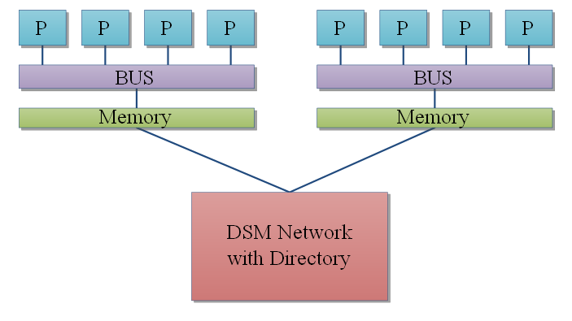

Multicoeurs, Hyperthreading, GPGPU : les architectures modernes
De nos jours, avec l’avènement des architectures multicœurs, de nombreux programmeurs cherchent à utiliser au mieux la puissance fournie par les processeurs modernes. En effet, il n'est pas rare de posséder des processeurs contenant plusieurs cœurs. Cela fait quelques années que de tels processeurs ont étés mis sur le marché et sont accessibles à tout un chacun moyennant une certaine somme d'argent (très souvent trop assez conséquente). L'utilité de tels processeurs est très simple : la performance ! De tels processeurs permettent de faire exécuter des instructions indépendantes dans des processeurs séparés. Cette solution qui consiste à répartir des calculs sur plusieurs processeurs s'appelle le parallélisme.
Mais les processeurs multicœurs ne sont pas les seuls processeurs permettant de faire ceci : de nombreux autres processeurs et architectures permettent d’exécuter plusieurs calculs simultanément. Entre les ordinateurs embarquant plusieurs processeurs, les architectures dataflow, les processeurs vectoriels et autres, il y a de quoi être perdu assez rapidement. Mais rassurez-vous : ce tutoriel est là ! Grâce à ce tutoriel, vous aurez un aperçu des différentes architectures parallèles et vous verrez leurs forces et leurs faiblesses. Nous parlerons aussi bien du fonctionnement de ces processeurs et ordinateurs que des interactions entre matériel et logiciel : préparez-vous, le monde du parallélisme vous attend.
Il existe différents types d'ordinateurs parallèles, tous plus bizarres que les autres. L'imagination des chercheurs en architectures de ordinateurs a en effet été mise à rude épreuve devant le défi que nous imposait la création des architectures parallèles et de nombreuses architectures ont étés inventées pour répondre à ce besoin. Si on devait se lancer sans chercher à organiser le tout, on serait rapidement perdu. Pour se faciliter la tâche, diverses classifications ont été inventées pour mettre un peu d'ordre dans tout ce foutoir.
Il faut savoir qu'il existe différentes formes de parallélisme, qui ne cherchent pas à paralléliser la même chose et ne fonctionnent pas de la même façon. Pour s'y retrouver, diverses classifications ont vus le jour.
Quoi ?
La première d'entre elle se base sur ce qui est parallélisé.
Parallélisme de Threads
La première solution, la plus évidente, consiste simplement à exécuter des calculs indépendants en parallèle. Pour cela, il suffit de découper notre programme en plusieurs sous-programmes indépendants qu'on peut faire éxecuter en parallèle. Ces sous-programmes indépendants sont ce qu'on appelle des Threads.
Il suffit de faire exécuter chaque Thread sur un processeur séparé pour pouvoir paralléliser le tout. Les architectures permettant d’exécuter des threads en parallèle sont donc des architectures multiprocesseurs ou multicœurs, ainsi que quelques autres processeurs un peu spéciaux. Avec ce genre de parallélisme, le découpage d'un programme en threads est avant tout un problème logiciel. Ce découpage est donc dans ce cas du ressort du compilateur ou du programmeur : c'est à eux de modifier le programme pour le paralléliser. Nos langages de programmation disposent souvent de mécanismes permettant de découper notre programmes en threads logiciels, exécutables en parallèle si le matériel le permet. Dans certains cas, le compilateur peut s'en charger tout seul, bien que cela soit plus rare.
Et enfin, plus étonnant, certains processeurs sont capables de découper un programme à l’exécution, éventuellement grâce à des indications fournies par le programme lui-même ! On peut ainsi, à partir d'un programme unique non-découpé en threads, utiliser plusieurs cœurs ou processeurs sans problèmes ! Le découpage en thread se fait alors à l’exécution, et ce de façon optimale en fonction du nombre de processeurs. Mais cela est tout de même assez rare, même si cela a déjà été tenté : on reviendra dessus quand je parlerai des architectures EDGE et du spéculative multithreading dans ce tutoriel.
Parallélisme d'instruction
Mais certains chercheurs se sont dit que penser hors du cadre ne faisait pas de mal : ceux-ci ont considéré que paralléliser un programme pouvait être un problème matériel, et que créer des architectures réellement conçue pour exécuter des instructions en parallèle serait une grande avancée. Créer des architectures spéciales serait donc un gros plus qui permettrait non pas de découper des programmes entiers en morceaux qu'on pourrait exécuter en parallèle, mais permettrait de paralléliser directement un programme au niveau de ses instructions ! Nos chercheurs ont cherché (quoi de plus normal...) un moyen de créer des ordinateurs de ce genre, sans trop d'aide venant du logiciel. Les architectures dataflow furent une de ces réponses. Mais nous ne parlerons pas de ces architectures spéciales dans ce tutoriel.
Les techniques apprises sur les ordinateurs dataflow ont malgré tout été reprises dans les processeurs modernes, qui incorporent des techniques comme l'Out Of Order et autres renommages de registres, qui sont des descendants directs de nos architectures dataflow. Ces techniques permettent à un processeur seul d’exécuter plusieurs instructions simultanément, à la condition que ces instructions appartiennent à un seul et unique programme. Les concepteurs de processeurs on en effet inventé des tas de techniques permettant à notre processeur de ne pas exécuter des instructions dans l'ordre prévu par le programmeur : le pipeline, l'Out Of Order, la création de processeurs superscalaires, etc. Sachez juste que cette forme de parallélisme n'est pas au programme de ce tutoriel : le tutoriel Fonctionnement d'un ordinateur depuis zéro se charge déjà d'expliquer certaines de ces techniques. Allez donc lire la partie 7 si vous vous en sentez le courage et que vous en avez les compétences !
Parallélisme de données
Autre solution, exécuter le même programme sur des données différentes et indépendantes. Cela permet donc de traiter N données sur N processeurs en même temps. Pour résumer : tous les processeurs exécutent un seul et unique programme ou une suite d'instructions, mais chacun de ces processeurs va travailler sur une donnée différente. Cette solution est celle qui est la moins limitée, comme on le verra plus tard : il n'y a pas vraiment de limitations théoriques à ce genre de parallélisme.
Les processeurs pouvant faire ce genre de chose ne sont pas rares, bien au contraire : la quasi-totalité des processeurs est aujourd'hui de ce type. Plus précisément, tous les processeurs Intel et AMD actuels, ainsi que leurs confrères de chez ARM, MIPS et VIA en sont capables. Le parallélisme de donnée est aussi massivement utilisé dans les cartes graphiques, qui sont des composants devant exécuter les mêmes instructions sur un grand nombre de données : chaque calcul sur un pixel est plus ou moins indépendant des transformations qu'on effectue sur ses voisins.
Taxonomie de Flynn
Maintenant qu'on connait un peu les différentes formes de parallélisme, on va maintenant voir les différents types d'architectures parallèles. Dans les années 1966, un scientifique américain assez connu dans le milieu du hardware qui se nomme Flynn a classé ces architectures en 4 grandes catégories : SISD, SIMD, MISD, et MIMD. Cette classification a remarquablement tenue le coup au fil du temps : on a beau eu inventer des tas d'architectures plus bizarres les unes que les autres, cette classification n'en est pas moins restée consistante et redoutablement fiable. Elle n'est pas parfaite, et certaines architectures ne rentrent pas vraiment dans les catégorie de la classification de Flynn, mais ce n'est qu'un détail que je me permets de passer sous silence. Aussi, je me permets de vous parler de cette classification qui, bien que simpliste, est d'une grande aide au quotidien (ou presque).
SISD
Le premier type d'ordinateur correspond aux processeurs purement séquentiels et incapables de toute forme de parallélisme. Ceux-ci vont exécuter une instruction sur un seul ensemble de données, et rien d'autre. Ce sont les ordinateurs SISD (Single Instruction Single Data).
SIMD
Vient ensuite le tour des architectures SIMD (Single Instruction Multiple Data), qui sont des architectures permettant d'exploiter le parallélisme de données. Celles-ci peuvent exécuter une instruction sur plusieurs données à la fois.
On verra ces types d'architectures en détail dans notre tutoriel. Vous verrez par exemple que nos processeurs un tant soit peu récents possèdent des instructions machines capables d'effectuer des calculs sur plusieurs données différentes à la fois, ce qui les classe d'office dans la catégorie SIMD. C'est aussi le cas de pas mal de cartes graphique, comme on le verra plus tard. Nous verrons aussi des architectures composées de plusieurs processeurs, sur lesquelles chaque processeur exécute la même instruction que ses collègues, mais sur des données différentes.
MISD
Vient ensuite le tour des ordinateurs MISD (Multiple Instruction Single Data). Ceux-ci peuvent exécuter des instructions différentes en parallèle sur une donnée identique.
Autant prévenir tout de suite : on ne verra aucun exemple de ce type dans le tutoriel. Cette catégorie d’architectures est vraiment très rare. On peut citer comme exemples d'architectures MISD les architectures systoliques et cellulaires.
MIMD
Et enfin, voici la classe la plus importante : les architectures MIMD (Multiple Instruction Multiple Data). Celles-ci peuvent éxecuter des instructions différentes sur des données différentes.
Nos processeurs multicœurs et multiprocesseurs font partie de la catégorie MIMD.
On peut préciser que cette catégorie MIMD peut être découpée en deux sous-catégories. La première est le Single Program Multiple Data , aussi appelé SPMD : cela consiste à exécuter un seul programme sur plusieurs données à la fois. Dit comme cela, on pourrait croire qu'il s'agit de SIMD. Mais il y a une différence : avec le SPMD, on peut parfaitement exécuter des morceaux de programmes différents sur des données différents. Le SIMD force à exécuter la même instruction sur plusieurs données. Vient ensuite le Multiple Program Multiple Data, qui consiste à exécuter des programmes en parallèle sur des données différentes.
Résumé
Cette classification peut sembler simple, mais est tout de même redoutablement efficace. Elle marche pour la grosse majorité des architectures parallèles que nous allons voir dans ce tutoriel, les cas spéciaux méritant un article à eux tout seuls.
La capacité à traiter des données ou des instructions différentes simultanément n'est pas la seule différence entre les architectures parallèles : la façon dont les processeurs doivent se partager la mémoire est aussi très importante. Suivant la façon dont est partagée la mémoire, de nombreux problèmes peuvent apparaitre. Aussi, il est important de savoir à comment est partagée la mémoire. Voyons un peu les différentes possibilités de partage de la mémoire.
SASM
Dans le premier cas, on se retrouve avec une seule et unique mémoire partagée entre tous les processeurs. Le temps mit pour accéder à la mémoire est identique pour tous les processeurs : on parle alors d'Unifed Memory Access ou encore d'UMA.
Avec ce genre d'architecture, rien n’empêche à plusieurs processeurs de vouloir accéder à la mémoire en même temps. Seul problème : la mémoire ne peut lire ou écrire qu'une donnée à la fois (enfin sur des mémoires normales : on passe sous le tapis le cas des mémoires multiports). Il va donc falloir trouver des moyens pour arbitrer les accès à la mémoire entre les processeurs pour éviter les problèmes. Par exemple, imaginez qu'un processeur aille modifier une donnée qui est en cours de traitement par un autre processeur : on peut aller rapidement vers une belle catastrophe et il est facile de se retrouver avec des données écrasées, mises à jour trop tôt, ou pire. Pour éviter ce genre de situations fâcheuses, le matériel se charge alors de fournir quelques instructions pour faciliter la communication ou la synchronisation entre les différents morceaux de programmes (interruptions inter-processeurs, instructions machines atomiques permettant d'implémenter des Mutex, etc).
La conséquence, c'est que les couts de synchronisation et de communication entre les différents morceaux de programmes peut être assez conséquent et peut réduire les performances si on s'y prend assez mal : ce partage de la mémoire est assez embêtant. Sans compter certaines contraintes concernant la hiérarchie mémoire, qui jouent souvent de mauvais tours.
Et avec des caches ?
Il n'est pas rare que l'on améliore l'architecture SASM en rajoutant ce qu'on appelle des mémoires caches. Il s'agit simplement de mémoires intercalées entre la RAM de l'ordinateur et le processeur. Ces mémoires caches sont plus petites, mais aussi plus rapides et permettent ainsi d’accéder plus rapidement à la mémoire RAM de l'ordinateur. Il faut dire que la mémoire RAM est vraiment plus lente que le processeur, qui passe beaucoup de temps à attendre la mémoire. C'est pour limiter la casse que l'on a inventé ces fameux caches.
Cela permet d’accélérer l'accès à la mémoire partagée, et permet ainsi des gains assez conséquents. Malheureusement, ajouter un ou plusieurs caches sur des architectures SASM entraine l'apparition de quelques petits problèmes lorsque deux processeurs doivent écrire au même endroit en mémoire. Imaginons que deux processeurs manipulent une donnée : ceux-ci ont une copie de la donnée dans leur cache qu'ils manipulent et modifient à loisir. Si un processeur modifie cette copie de la donnée et que celle-ci est enregistrée dans son cache ou en mémoire, elle sera alors différente de celle présente dans le cache de l'autre processeur. Ce qui fait qu'un processeur peut continuer à manipuler une donnée périmée qui vient d'être mise à jour par l'autre processeur. Et ça peut poser quelques problèmes ! Un processeur doit toujours éviter de se retrouver avec une donnée périmée et doit toujours avoir la valeur correcte dans ses caches : cela s'appelle la cohérence des caches.
De manière générale, les mémoires caches posent de sacrés problèmes sur pas mal d'architectures parallèles. Autant prévenir tout de suite : je parlerai beaucoup des mémoires caches et des problèmes qu'elles peuvent poser dans ce tutoriel. Mais on abordera le sujet en détail plus tard.
DADM
Viennent ensuite les architectures DADM, aussi appelées les architectures distribuées. Avec elles, chaque processeur possède sa propre mémoire, sans aucune mémoire partagée entre les processeurs. Tous les processeurs sont reliés entre eux via un réseau local, qui leur sert à échanger des données ou des ordres un peu particuliers.
Les processeurs peuvent ainsi accéder à la mémoire d'un autre processeur via le réseau local : il leur suffit de faire une demande au processeur qui détient la donnée. Cette demande va traverser le réseau local et arriver à son destinataire : la donnée demandée est alors envoyée via le réseau local et est copiée dans la mémoire locale de l’ordinateur demandeur. Il va de soit que les communications entre les différents processeurs peuvent prendre un temps relativement long, et que ceux-ci sont loin d'être négligeables. Avec une organisation de ce genre, la qualité et les performances du réseau reliant les ordinateurs est très important pour les performances.
Encore des caches
Bien sûr, rien n’empêche de mettre des mémoires caches entre la mémoire d'un processeur et celui-ci.
Cette fois, placer des mémoires caches ne pose strictement aucun problème : on n'a pas besoin de garantir la cohérence des caches avec ce genre de système.
SADM
Enfin, il reste une dernière classe d'architectures : les architectures SADM. Avec elles, les processeurs possèdent une mémoire locale, qui leur est réservée et dans laquelle ils peuvent faire ce que bon leur semble. Mais ils peuvent aussi accéder aux autres mémoires : cela leur prend un peu plus de temps.
Voici un exemple d'architecture NUMA possible.

Avec cette méthode, chaque processeur voit toute les mémoires virtuellement rassemblées dans une seule grosse mémoire unique. Accéder à une portion de cette mémoire unique correspondant à sa mémoire locale est rapide, mais accéder à une portion de la grosse mémoire unique correspondant à la mémoire d'un autre processeur est redoutablement plus lent. Bien gérer les temps d'accès aux différentes mémoires est donc un plus bien agréable.
Des caches, encore et toujours !
On peut encore une fois utiliser des mémoires caches sur ce genre de machines, mais on retombe sur un problème : la cohérence des caches n'est pas assurée et on doit se débrouiller pour qu'elle le soit, comme pour les architectures SASM.
On a vu dans le chapitre précédent que l'on pouvait donc utiliser plusieurs processeurs pour traiter des taches ou des données.
Mais existe-t-il des limites à l'utilisation de plusieurs processeurs ?
Dans ce chapitre, on va voir que suivant la manière utilisée pour exploiter plusieurs processeurs, les résultats changent du tout au tout. On y verra que dans certains cas, ajouter des processeurs ne sert pas à grand chose, voire à rien. Dans d'autres, il n'y a pas vraiment de limites théoriques aux gains de performances que l'on peut obtenir en ajoutant des processeurs.
Imaginez que vous ayez codé un programme, spécialement conçu pour exploiter plusieurs processeurs. Votre programme est conçu de façon à répartir ses calculs sur autant de processeurs que possible.
Seul problème, vous ne savez pas trop quel sera le gain que vous obtiendrez en utilisant plusieurs processeurs avec un programme pareil, et vous voudriez savoir quel est le gain théorique maximal que vous pourriez obtenir. Et bien pour connaître ce gain maximal, vous pouvez utiliser la loi d'Amdhal. Cette loi est basée sur une approche simple : on prend un programme et on regarde ce qui se passe en fonction du nombre de processeurs.
Hypothèses de base
Pour démontrer cette loi, on va supposer :
que notre ordinateur contient un nombre N de processeurs,
qu'une portion plus ou moins importante de notre programme peut utiliser plusieurs processeurs ,
cette utilisation est la plus efficace possible quel que soit le nombre de processeurs,
on se moque des coûts induits par la gestion du code s’exécutant sur plusieurs processeurs, le système d’exploitation, la façon dont est conçu le matériel, et on passe tous ces détails sous le tapis.
Expliquons un peu plus en détail la deuxième hypothèse. Une portion de notre programme peut exploiter plusieurs CPU : on l'appelle le code parallèle. Mettre plusieurs CPU n'accélérera que cette portion du programme et pas le reste. Intuitivement, on se doute que plus la quantité de ce code parallèle est importante, plus notre programme profitera de la présence de plusieurs processeurs. On va appeler le reste du programme, incapable d'exploiter plusieurs CPU, le code série. Là encore, on devine facilement que plus le programme contient de code série, moins notre programme gagnera en performances si l'on augmente le nombre de processeurs.
Pour calculer le gain maximal que l'on peut obtenir sur N processeurs, on suppose que ce code parallèle peut tout aussi bien exploiter la puissance d'un seul processeur, que de 2, 20, voir 10 000 000 processeurs. Bref, ce code est quasiment parfait et on s'interdit les situations du style : on observe un gain énorme avec 2 ou 4 processeurs, mais pas au-delà.
De plus, ce programme est exécuté sur la même quantité de données : on ne rajoute pas de données en même temps qu'on ajoute des processeurs, et ces données ont toujours la même taille, histoire de comparer ce qui est comparable.
Un seul processeur
Pour commencer, il va nous falloir une référence pour pouvoir comparer les gains dû à l'ajout de processeurs. La meilleure référence, c'est le cas où l'on utilise un seul processeur.
Le temps mis par notre programme pour s’exécuter sur un seul processeur, qu'on notera T, est donc la somme :
du temps d’exécution du code série, noté Ts,
et du temps d’exécution du code parallèle sur un seul processeur, noté Tp.
T = Ts + Tp
Plusieurs processeurs
Maintenant, on va prendre plusieurs processeurs et comparer.
Mais combien va-t-on prendre de processeurs ?
N processeurs, pas un de plus, pas un de moins ! :p
Voyons ce qui se passe : le code parallèle va faire exécuter des calculs simultanément sur ces N processeurs, au lieu de les exécuter les uns après les autres. Le temps passé à exécuter ce code parallèle va diminuer.
Mais que vaut le temps d’exécution du code parallèle sur N processeurs ?
Pour l'évaluer, on n'a pas vraiment le choix : on doit utiliser une des hypothèses de départ qui dit que notre code va répartir au mieux ses instructions sur les N processeurs. Le temps d’exécution du code parallèle sera alors divisé par le nombre de processeurs N. Bien sûr, le code série n'est pas affecté par le nombre de processeurs : celui-ci est exécuté sur un seul processeur et met donc toujours le même temps à s’exécuter : Ts ne change pas !
En notant T(N) le temps mis par notre code à s’exécuter sur N processeurs, on obtient donc :
T(N) = Ts + \frac {Tp} {N}
On rappelle que Tp est le temps mis pour exécuter le code parallèle sur un processeur, pas N.
Gain
Mais que faire pour comparer le temps d’exécution du programme sur la machine avec un processeur et celui mesuré sur une machine avec plusieurs processeurs ? Pour cela, on va devoir calculer un truc que l'on appelle le gain.
Ce gain se calcule en inversant la fraction vue au-dessus, ce qui nous donne :
Gain = \frac {T} {T(N)}
En clair, il suffit de diviser le temps d’exécution obtenu avec un seul processeur par le temps d’exécution sur N processeurs.
Ce gain a une signification simple : si le gain vaut X, alors l'application est X fois plus rapide que si on l’exécutait sur un seul processeur. On verra ainsi si le programme s’exécute 2, 3, voir 50 fois rapidement. Bien évidemment, plus ce gain est élevé, plus notre programme aura gagné en performance comparé à la version avec un seul processeur.
Exemple
Si le temps de calcul avec, mettons 5 processeurs (donc N = 5) est la moitié du temps de calcul obtenu avec un seul processeur, cela veut dire que
\frac {T(5)} {T} = \frac {1} {2}
Dans ce cas, on peut aussi dire que le programme va deux fois plus vite. Vu que le temps de calcul avec 5 processeurs est égal à la moitié du temps de calcul avec un seul processeur, on peut aussi dire que le temps de calcul avec un processeur est en effet 2 fois plus long que le temps de calcul avec 5. Cela se vérifie en calculant simplement notre gain :
\frac {T} {T(5)} = 2
Dérivation de la Loi d'Amdhal
Partons de notre fraction
\frac {T(N)} {T}
Remplaçons T(N) par sa valeur explicitée plus haut à savoir
T(N) = Ts + \frac {Tp} {N}.
On trouve donc le rapport entre T et T(N) qui vaut
Et là, il faut remarquer deux choses très simples :
\frac {Ts} {T} n'est rien d'autre qu'un pourcentage : c'est le pourcentage de temps mis à exécuter le code série.
De même, \frac {Tp} {T} est le pourcentage de temps mis à exécuter le code parallèle.
En posant S = \frac {Ts} {T} et P = \frac {Tp} {T}, on peut alors simplifier notre equation en
\frac {T(N)} {T} = S + \frac {P} {N}
On peut alors calculer le gain en inversant notre fraction et on trouve
\frac {T} {T(N)} = \frac {1} {S + \frac {P} {N}}
On peut aussi remarquer que S = 1 - P et ainsi obtenir
Gain = \frac {1} {1 - P + \frac {P} {N}}
Cette équation s'appelle la loi d'Amdhal et nous donne la gain maximal théorique que l'on peut obtenir avec un code passant P pourcents de son temps d’exécution dans un code parallèle, avec N processeurs.
Ce que nous dit la loi d'Amdhal
Cette loi nous donne donc une estimation du gain en temps d’exécution d'une application exécutée sur plusieurs processeurs. Mais que peut-on en déduire d'utile ? Peut-on trouver des moyens de gagner en performance efficacement grâce à cette loi ? Oui, et c'est ce qu'on va voir.
Parallélisons mieux !
Tout d'abord remarquons une chose : quand on fait tendre le nombre de processeurs vers l'infini, le gain atteint un maximum qui vaut Gain = \frac {1} {1 - P}
Qu'on peut simplifier en Gain = \frac {1} {S}
Cela signifie une chose très simple : quand N tend vers l'infini, le code parallélisé est exécuté en un temps qui tend vers 0. Seul reste le code série qui ne peut pas être accéléré par plusieurs processeurs. Le temps d’exécution de ce code restant le même, le temps d’exécution du programme ne peut pas descendre en-dessous du temps d’exécution du code série. C'est donc la première limite que nous impose la loi d'Amdhal.
La solution la plus simple est donc de paralléliser le plus possible le code de notre programme, histoire de faire diminuer S et augmenter P le plus possible. C'est cela qui est le plus recherché à l'heure actuelle. Seul problème : tous les programmes ne se laissent pas paralléliser aussi facilement. Certains programmes se parallélisent facilement parce que les calculs qu'ils ont à faire sont assez indépendants. Mais d'autres n'ont pas cette particularité et sont très très difficilement parallélisables, voire pas du tout.
Nombre de processeurs
L'autre solution est d'augmenter le nombre de processeurs, afin de réduire le plus possible le terme \frac {P} {N} . Mais cette solution a une efficacité assez limitée : il faut que la part de code parallélisable soit suffisante pour que cela ait un impact suffisant.
Imaginons un exemple simple : 20% du temps d’exécution de notre programme (quand il est exécuté sur un seul processeur) est passé à exécuter du code parallèle.
Avec N processeurs, le gain calculable par la loi d'Amdhal nous donne un gain maximal de Gain = \frac {1} {1 - 0.2 + \frac {0.2} {N}}
Si on calcule le gain en fonction du nombre de processeurs, on obtient alors la tableau suivant.
Nombre de processeurs
Gain maximal
2
11.11%
3
15.38%
4
17.64%
5
19.04%
6
20%
7
20.6%
8
21.21%
...
...
16
23%
...
...
\infty
25%
On voit bien qu'au delà de 5 ou 6 processeurs, augmenter le nombre de processeurs ne sert pas vraiment à grand chose : doubler leur nombre revient souvent à augmenter les performances d'un misérable pourcent.
Cette solution devient donc très limitée quand on augmente le nombre de processeurs. En clair : au-delà d'un certain nombre de processeurs, ça ne marche plus !
Au-delà de 10 processeurs avec un code passant 20% de son temps à exécuter du code parallèle, le gain est négligeable. Pour prendre un autre exemple, au-delà de 8 processeurs, un code passant 50% de son temps à exécuter du code parallèle ne sera pas vraiment exécuté plus vite. 8 processeurs, cela correspond à une quadri-core incorporant la technologie SMT comme on en trouve chez intel. Remarquons que les programmes qui passent la moitié de leur temps à exécuter du code parallèle sont rares chez les programmes grand-public.
Code série
Une autre solution, plus simple est encore de diminuer le temps d’exécution du code série en optimisant le code, sans forcément chercher à le paralléliser. C'est la seule solution viable pour un programme contenant peu de code parallélisable. Pour donner un exemple, on va faire un petit tableau contenant le gain obtenu avec un programme avec un P de 10% en fonction du nombre de processeurs.
Nombre de processeurs
Gain maximal
2
5%
4
8%
8
10%
\infty
11.11%
Si notre programme ne peut pas voir P augmenter, au-delà de 4-8 processeurs, il vaudra mieux diminuer le temps d’exécution de celui-ci plutôt que de chercher à rajouter beaucoup de processeurs inutilement.
Dans la réalité
Enfin, une dernière remarque : la loi d'Amdhal est optimiste : elle a été démontrée en postulant que le code parallèle peut être réparti sur autant de processeurs qu'on veut et peut profiter d'un grand nombre de processeurs. Dans la réalité, rares sont les programmes de ce genre : certains programmes peuvent à la rigueur exploiter efficacement 2, 4 , voir 8 processeurs mais pas au-delà. Elle ne tient pas compte des nombreux problèmes techniques, aussi bien logiciels que matériels qui limitent les performances des programmes conçus pour exploiter plusieurs processeurs. La loi d'Amdhal donne une borne théorique maximale au gain apporté par la présence de plusieurs processeurs, mais le gain réel sera quasiment toujours inférieur au gain calculé par la loi d'Amdhal.
La loi d'Amdhal est basée sur une approche simple : on prend un programme qui fait ce qu'il y a à faire, et on regarde ce qui se passe en augmentant le nombre de processeurs.
Mais n'y aurait-il pas une autre façon de faire, qui permettrait d'utiliser plusieurs processeurs différemment ?
Et bien si !
Avec la loi d'Amdhal, on a pris un programme qui travaille toujours sur des données de même taille et on n'a pas augmenté le nombre de données à traiter avec le passage de 1 à N processeurs.
Au lieu de toujours utiliser la même quantité de données, pourquoi ne pas simplement utiliser les processeurs supplémentaires pour travailler sur un nombre de données plus grand ? Prenons l'exemple d'une application de traitement d'image : au lieu de travailler sur une image de 2048*2048, pourquoi ne pas utiliser nos processeurs pour travailler sur plusieurs images de même taille ou sur une image de taille quadruple, histoire de rentabiliser ?
Cela s'appelle le parallélisme de données, qui consiste à exécuter le même programme sur des données différentes et indépendantes. Cela permet donc de traiter N données sur N processeurs en même temps. Pour résumer : tous les processeurs exécutent un seul et unique programme ou une suite d'instructions, mais chacun de ces processeurs va travailler sur une donnée différente.
Et là encore, on peut trouver une loi similaire à la loi d'Amdhal, mais beaucoup moins restrictive : la loi de Gustafson !
Hypothèses de base
Prenons un programme s’exécutant sur un seul processeur. Celui-ci prend un temps Ts à exécuter son code série et un temps Tp pour exécuter son code parallèle. Ce code parallèle s’exécute sur une donnée (image, fichier son, ou autre). Ce code parallèle sera exécuté simultanément sur plusieurs données : ainsi, pour N données, On pourra prendre N processeurs et exécuter sur chacun d'eux le code paralléle sur une des N données.
En prenant 1 ou N processeurs, la partie série restera la même et sera executée sur un seul processeur durant un temps Ts.
Une seule donnée
Avec une seule donnée, le temps d’exécution T est égal à Ts + Tp, avec Ts le temps d’exécution du code série et Tp celui du code paralléle.
Plusieurs données
Par contre, durant le temps Tp, on pourra demander à chacun des N processeurs de traiter une donnée en un temps Tp. Ce qui fait qu'en un temps T, on peut demander à notre processeur d’exécuter un programme sur N données.
Dans ce cas, le temps T(N) vaut donc Ts + Tp.
Si ce calcul fait sur ces N données avait été fait sur un seul processeur, on aurait dû calculer ces Ndonnées unes par une, ce qui aurait pris un temps égal à T = Ts + ( N imes Tp )
A ce stade, une petite remarque s'impose : \frac {Ts} {Ts + Tp} est égal au pourcentage de temps S passé à exécuter le code série et \frac {Tp} {Ts + Tp} celui du code paralléle (sur N processeurs), qu'on note P.
On trouve la loi de Gustafson qui nous donne le gain en fonction du nombre de processeurs :
Gain = S + ( N imes P )
En remarquant que S = 1 - P, on trouve alors la loi de Gustafson
Gain = 1 - P + ( N imes P )
Que nous apprend Gustafson ?
La loi de Gusatfson répond à un besoin certain : comment faire pour exploiter au mieux le parallélisme lorsque l'on souhaite travailler sur une grande quantité de données. Cela correspond au parallélisme de données : exécuter simultanément un même programme sur des données indépendantes.
Plus le nombre de données traitées en parallèles est grand, plus ce genre de parallélisme est efficace. En effet, sur un seul processeur, si on augmente le nombre N de données, et que ces N données doivent être traitées par la partie parallélisée du programme, cela prendrait un temps égal à Ts + ( Tp imes N )
Mais surtout, il n'y a pas de limites théoriques à N : on peut mettre autant de données que l'on veut, avec N processeurs, celles-ci sont toutes traitées par un processeur simultanément et le temps mis pour traiter N données sur Nprocesseurs sera identique au temps mit pour traiter une donnée sur un seul processeur. Aucune limite n'existe concernant la quantité de données traitables simultanément, et donc au gain que l'on peut obtenir.
Bien sûr, il faut se rappeler que la loi de Gustafson s'applique sur une durée déterminée : elle ne rend pas les calculs plus rapides : si une donnée N met un temps T à être traitée, alors on ne gagne rien en terme de temps de calcul.
Voici donc quelques conclusions que l'on peut tirer avec ce que l'on vient de voir. Paralléliser un programme qui exécute de nombreux calculs en parallèle sur le même ensemble de données est voué à montrer "rapidement ses limites". Ce parallélisme est en effet soumi à la loi d'Amdhal. Par contre, le parallélisme de données, consistant à effectuer un même programme/sous-programme sur un ensemble de données différentes donne de très bons résultats.
Il existe néanmoins d'autres formules ou lois permettant de déduire plus ou moins précisément l'efficacité théorique de la parallélisation d'un programme quelconque. On peut citer par exemple la métrique de Karp–Flatt.
Mais dans la réalité, aucune de ces formules n'est utilisable directement : de nombreux autres paramètres interviennent, qui dépendent de l'architecture des processeurs utilisés, du langage de programmation utilisé et de la manière dont a été programmé le programme en question. N'oublions pas que ces formules sont théoriques, et ne servent qu'a donner des indictions qualitatives.
Dans ce qui précède, on a vu des ordinateurs possédant plusieurs processeurs. Vous devez donc fatalement penser qu'il faut obligatoirement plusieurs processeurs pour éxecuter plusieurs programmes en parallèle, mais sachez que c'est faux ! Il est parfois possible pour un processeur seul d’exécuter plusieurs programmes en même temps. Pour cela, il faut utiliser des processeurs spéciaux, qui utilisent des ruses de sioux.
A l'intérieur d'un processeur, on trouve un petit circuit qui est capable d'effectuer des calculs. Celui-ci s'appelle l'unité de calcul. Ce circuit n'est pas le seul présent dans notre processeur, loin de là, mais c'est celui qui va nous intéresser dans ce chapitre.
Le pipeline fait des bulles !
Il arrive souvent que l'unité de calcul d'un processeur ne fasse rien. Mine de rien, un paquet de phénomènes bizarres aux noms à coucher dehors (dépendances de données, accès à la mémoire, mauvaise prédiction de branchement, etc) peuvent aboutir à ce genre de choses. Par exemple, dans certains cas, le fait qu'une instruction doive attendre le résultat d'une autre peut rendre l'unité de calcul inutilisée durant un moment.
De nombreuses techniques ont étés inventées pour faire en sorte que notre unité de calcul soit utilisée au plus possible : utilisation de caches non-bloquants, forwarding, Out Of Order, exécution superscalaire, et autre techniques aux noms qui font peur aux enfants sont de la partie. Mais il arrive toujours que notre unité de calcul soit inutilisée durant quelques cycles. Par quelques cycles, on veut dire que quand on accède à la mémoire RAM, on peut faire patienter l'unité de calcul durant une bonne centaine de cycles d'horloge. Autant dire que niveau efficacité, on peut mieux faire !
Un jour, quelqu'un a eu une idée fabuleuse : puisqu'on arrive pas à trouver de quoi donner du travail à notre unité de calcul avec un seul programme, pourquoi ne pas essayer avec plusieurs programmes ? Au lieu de faire en sorte de ne réserver notre unité de calcul qu'aux instructions d'un seul programme, on pourrait prendre des instructions en provenance de plusieurs programmes et les répartir sur notre unité de calcul suivant les besoins : si un programme n'utilise pas notre ALU, elle sera disponible pour un autre.
Types de super-threading matériel explicite
Il existe différentes manières pour remplir notre unité de calcul avec des instructions en provenance de plusieurs programmes. Suivant la méthode utilisée, on peut se retrouver avec des gains plus ou moins intéressants et une unité de calcul plus ou moins utilisée. Dans ce qui va suivre, on va détailler ces différentes façons.
Fine Grained Multithreading
La première méthode consiste à switcher entre les programmes : on exécute une instruction d'un programme, puis on passe au second programme, et ainsi de suite. C'est le processeur qui se charge de passer automatiquement d'un programme à un autre, sans temps d'attente.
Cette technique a de nombreux avantages : on est certain que lorsque une instruction s’exécute, elle n'a pas à attendre le résultat de l'instruction exécutée juste avant elle. Ces deux instructions n'appartenant pas au même programme, il est impossible qu'une instruction doive manipuler le résultat d'une autre. Cela permet de grandement simplifier le processeur vu que l'on a pas besoin de gérer le cas où une instruction doit attendre le résultat d'une autre : ça fait des circuits en moins, et l'unité de calcul est mieux utilisée.
Mais ces processeurs ont un défaut : pour obtenir de bonnes performances, on est obligé d'avoir beaucoup de programmes en cours d’exécution. Sans cela, diverses raisons techniques vont faire que l'unité de calcul sera inutilisée durant pas mal de temps.
Pour limiter la casse, certains processeurs peuvent décider de lancer plusieurs instructions d'un même programme à la suite sur l'unité de calcul, au lieu de changer de programme constamment. Évidemment, cela nécessite des conditions particulières. Généralement, chaque instruction va contenir quelques bits qui permettront de dire au processeur : tu peux lancer 1, 2, 3; etc : instructions à la suite sans problème, il n'y aura pas de dépendances entre ces instructions. Ainsi, le processeur peut décider si besoin d'alimenter l'unité de calcul avec ces instruction du même programme. Cette technique s'appelle la dependance lookahead technique.
La technique du Fine Grained Multithreading pose tout de même quelques problèmes : on n'a rarement suffisamment de programmes pour alimenter l'unité de calcul convenablement, et les techniques de dependance lookahead n'arrivent pas forcément à limiter la casse. Aussi cette technique de parallélisme matériel a assez peu d'efficacité en dehors de quelques cas particuliers.
Coarse Grained Multitrheading
Autre forme de parallélisme matériel : le Coarse Grained Multitrheading. Avec celui-ci, le processeur décide toujours de changer de programme, mais il fait nettement moins souvent. Le changement de programme se fait lors de certains évènements particuliers qui prennent du temps.
L'idée est d’exécuter les instructions d'un programme normalement, jusqu'à ce qu'un évènement rendant l'unité de calcul inutle durant un certain temps arrive : accès à la mémoire (cache miss), branchement mal prédit, etc. Au lieu de passer tout ce temps à ne rien faire, autant changer de programme pour remplir les vides avec des instructions d'un autre programme.
Suivant le processeur, les évènements faisant changer de programme ne sont pas forcément les mêmes. Sur certains processeurs, on change de programme lorsque certaines instructions sont exécutées : accès à la mémoire, branchements, etc. Sur certains processeurs, on utilise une instruction de changement de programme, fournie par le jeu d'instruction du processeur : elle seule peut faire changer le programme exécuté. Et enfin, nettement plus intéressant : certains processeur décident tout seuls quand changer de programme ! Généralement, ces processeurs changent de programme à éxecuter lorsqu'on doit accéder à la mémoire (lors d'un cache miss). Il faut dire que l'accès à la mémoire est quelque chose de très lent, aussi changer de programme et éxecuter des instructions pour recouvrir l'accès à la mémoire est une bonne chose.
Il faut tout de même remarquer une chose : pour être efficace, ce genre de processeurs a besoin de pouvoir accéder à la mémoire cache pendant qu'il attend des données en provenance de la mémoire. En termes techniques, on dit que celui-ci a besoin de caches non-bloquants. Et oui, il n'est pas rare que les instructions du programme fraichement démarré doivent accéder à la mémoire cache pour faire leurs calculs : autant dire que si le cache n'est pas utilisable parce qu'un autre programme est interrompu pour accéder à la mémoire, ça la fout mal !
Simultaneous Multithreading
Les techniques vues au-dessus imposent pas mal de contraintes et surtout peuvent laisser l'unité de calcul inutilisée durant assez longtemps. Pour éviter ce genre de choses, il existe une dernière technique qui permet de mieux exploiter l'unité de calcul dans pas mal de situations. Il s'agit du Simultaneous Multi-Threading ou SMT.
Cette technique consiste à faire pareil que ses prédécesseurs, à une différence prêt : aucun programme n'a la priorité sur l'autre. Pas besoin de changer de programme tout les cycles ou lors d'un évènement particulier : les deux programmes s’exécutent en même temps, et chaque programme va utiliser l'unité de calcul dès que les autres la laissent libre.
Ce fameux Simultaneous Multi-Threading porte un autre nom : Intel lui a en effet donné le nom d'Hyperthreading, pour de sombres raisons marketing. Après tout, Hyperthreading est quand même un nom un peu plus vendeur que Simultaneous Multi-Threading. :-° Le premier processeur Intel qui a intégré cette technologie était le processeur Intel Pentium 4. Il faut dire que ce processeur possédait des caractéristiques techniques (un pipeline long, trop long) qui faisaient qu'il utilisait assez peu son unité de calcul et qu'il avait énormément de vides à remplir. L'Hyperthreading était limité à deux programmes/threads logiciels différents et ne pouvait faire plus.
Processeurs superscalaires
Nos ordinateurs modernes implémentent souvent non pas une, mais plusieurs unités de calcul. C'est ainsi, au lieu d'utiliser une seule unité de calcul, ceux-ci peuvent répartir les instructions d'un programme sur ces différentes unités de calcul histoire d'aller plus vite. Ainsi, nos processeurs peuvent contenir entre 2, 4, 8, voire encore plus unités de calcul, sans problèmes (ou presque). Et il faut savoir que les techniques vues au-dessus se marient très bien avec la présence de plusieurs unités de calcul. On a beaucoup plus d'opportunités pour éxecuter des instructions de programmes différents !
Reste à savoir comment notre processeur est capable de réussir ce genre de prouesses. Et on va le voir, ce n'est pas si difficile que ça ! Mais pour commencer, quelques rappels sont de rigueur !
Cycle Fetch / Exécution
Nos processeurs sont censés éxecuter des instructions machines. Pour ce faire, ceux-ci comportent donc une unité de calcul, qui est capable d’exécuter notre instruction. Mais notre unité de calcul n'est pas le seul circuit nécessaire pour éxecuter notre instruction : notre instruction n'arrive pas de nulle part ! Chaque instruction est représentée dans notre ordinateur sous la forme d'une suite de bits, stockée dans la mémoire RAM de notre ordinateur à un endroit bien précis. Celles-ci sont placées les unes à la suite des autres dans l'ordre où elles doivent être exécutées.
Par exemple :
Adresse
Instruction
0
Charger le contenu de l'adresse 0F05
1
Charger le contenu de l'adresse 0555
2
Additionner ces deux nombres
3
Charger le contenu de l'adresse 0555
4
Faire en XOR avec le résultat antérieur
...
...
5464
Instruction d'arrêt
Pour se souvenir d'où il en est, le processeur contient une petite mémoire qui contient la position (l'adresse mémoire) de notre instruction dans la RAM de l'ordinateur. Vu que nos instructions sont placées les unes après les autres en mémoire, ce registre permet de localiser la prochaine instruction à éxecuter : il suffit d'augmenter le contenu de ce registre de façon à le faire pointer sur l'instruction suivante à chaque exécution d'une instruction. Ce fameux registre s'appelle le Program Counter. Il existe quand même un moyen pour modifier l'ordre d’exécution des instructions : certaines instructions permettent de modifier le contenu du Program Counter. Ces instructions permettent de "sauter" directement à une instruction voulue dans le programme et poursuivre l'exécution à partir de celle-ci. Ce sont les instructions de branchements.
Cette instruction, il va falloir la charger depuis la mémoire, et l'amener de la mémoire à notre unité de calcul. C'est le rôle d'un ou de plusieurs circuits présents dans notre processeur, qui contient notamment notre fameux Program Counter. Ce chargement est toutefois un peu plus compliqué : un processeur ne fonctionne pas aussi simplement, et notre circuit chargé de récupérer une instruction depuis la mémoire est un peu plus complexe : il est découpé en plusieurs circuits qui effectuent des taches diverses comme " décoder l'instruction " ou " renommer des registres ". Cela consiste à interpreter la suite de bits qui représente l'instruction et en déduire comment configurer l’unité de calcul et les autres circuits du processeur. Mais cela ne nous intéresse pas ici.
On peut donc considérer que notre processeur est découpé en deux grands circuits : une unité de calcul (aussi appelée ALU) qui se charge de faire les calculs, et un circuit qui se charge de récupérer l'instruction depuis la mémoire.
Notre processeur contient aussi de petites mémoires ultra-rapides qui servent à stocker temporairement des données : on les appelle des registres. Pour information, le Program Counter est un de ces registres. Généralement, une instruction qui doit manipuler une donnée contenue dans un registre devra indiquer qu'elle veut manipuler ce registre dans sa suite de bits. Un programme pourra manipuler le contenu des registres, pour plus de simplicité et de performances. Pour identifier chacun des registres, on donne à ceux-ci des noms, qui ne sont rien d'autres que des numéros.
Niveau circuits
Autrefois, on fusionnait les circuits chargés du chargement de notre instruction (et de tas d'autres taches annexes), et l'unité de calcul. Mais aujourd’hui, ce n'est pas le cas : ces deux circuits sont séparés. Cela a un avantage certain : l'unité de chargement (aussi appelée l'unité de Fetch) peut ainsi éxecuter une instruction sur l'unité de calcul et commencer à charger l'instruction suivante.
Multiple Fetch
Les processeurs permettant d’exécuter plusieurs programmes utilisent cette technique à fond. En effet, ceux-ci doivent remplir les vides de notre unité de calcul avec des instructions en provenance de plusieurs programmes. En clair, ceux-ci doivent charger à l'avance plusieurs instructions : au minimum une par programme ! Il restera ensuite à les répartir sur notre unité de calcul suivant les besoins.
Pour cela, on va devoir trouver un moyen pour charger plusieurs instructions, en provenance de programmes différents. Mine de rien, la solution est assez simple : il suffit d'utiliser plusieurs unités de chargement, chacune avec son Program Counter. Voilà qui est simple.
Toutefois, cela n'est pas la seule solution : on peut très bien rassembler ces plusieurs unités de chargement en une seule grosse unité, avec plusieurs Program Counter (toujours un par programme). Mais cela est un détail. ^^ Quoiqu'il en soit, beaucoup de circuits sont dupliqués dans un processeur utilisant le SMT.
Decoupled architectures
Il faut bien stocker ces instructions préchargées quelque part. Et pour cela, on va intercaler une petite mémoire entre l'unité de chargement/décodage et l'unité de calcul. Cette petite mémoire s'appelle l'instruction buffer. Nos instructions seront donc mises en attente dans cette mémoire tampon, avant d'être réparties sur notre ALU au besoin. Pour cela, un circuit spécialisé, le dispatcher se chargera de répartir les différentes instructions sur les unités de calcul.
Ainsi, on peut répartir nos instructions en provenance de divers programmes sur notre ALU. Il suffit de précharger les instructions en provenance de nos programmes dans cet Instruction Buffer, et laisser le dispatcher faire son travail. Sur les processeurs utilisant le SMT, on trouve non pas un, mais plusieurs Instruction Buffers. Il y en a un par programme.
Jeu de registres
Il nous reste enfin un léger petit problème à régler : chaque programme manipule des registres et il semble difficile de partager un registre pour le laisser stocker plusieurs données en provenance de plusieurs programmes. Il faudra donc dupliquer les registres histoire que chaque programme puisse avoir son ensemble de registres rien qu'à lui. Cela évite que nos processeurs se marchent sur les pieds.
Il faudra aussi faire quelques modifications : les registres étant identifiés par des noms, dupliquer des registres ne suffira pas. Si deux programmes utilisent le même nom de registre, ils utiliseront le même registre. Pour éviter les ennuis, on va donc décider de placer chaque registre ayant un nom en plusieurs exemplaires : plusieurs registres auront le même nom, et chacun d'entre eux se verra attribuer à un programme différent. Dans les faits, cela est fait en dupliquant les registres, et aussi en ajoutant des circuits qui permettront de savoir à quel programme est attribué chaque registre.
Et voilà, on obtient enfin notre processeur, qui utilise du SMT.
Dans les chapitres précédents, on a vu que le parallélisme de tache pouvait s’accommoder d'un seul processeur. Néanmoins, ces techniques ne sont pas des plus efficaces, et rien ne vaut l'utilisation de plusieurs processeurs pour réellement tirer partie du parallélisme de taches.
Les premières tentatives pour implémenter le parallélisme au niveau matériel ont étés des plus simples : il suffisait simplement de mettre plusieurs ordinateurs ensemble et de les relier via un réseau local. Puis, on a ensuite utilisé une autre méthode : placer plusieurs processeurs dans la même machine. Ainsi, certains ordinateurs contenaient une carté mère sur laquelle on pouvait mettre plusieurs processeurs, généralement 2 ou 4. Mais utiliser plusieurs processeurs n'est pas la seule solution pour éxecuter plusieurs programmes en parallèles.
Vous avez tous surement entendus parler des processeurs multicœurs, et si ça se trouve, vous avez la chance d'en posséder un. Ces processeurs permettent aussi d'éxecuter plusieurs programmes à la fois.
Le multicœurs, c'est quoi ?
Avant toute chose, il pourrait paraitre bizarre qu'un seul processeur puisse éxecuter plusieurs programmes simultanément. Logiquement, un processeur n'est censé éxecuter qu'un programme à la fois (sauf si celui-ci utilise le Simultaneous Multithreading). On vous a surement dit que ce processeur contenait plusieurs cœurs, capables d’exécuter des programmes en parallèle, mais cela ne vous a pas vraiment éclairé ? Et bien je vous le donne en mille : en fait, un processeur multicœurs n'est rien d'autre qu'une puce de silicium sur laquelle on a placé plusieurs processeurs ! Et oui, ce n'est rien de plus que cela. Chacun de ces processeurs intégré dans ce circuit s’appellera un coeur.
Suivant le nombre de cœurs présents dans notre processeur, celui-ci sera appelé un processeur dual-core (deux cœurs), quad-core (4 cœurs), octo-core (8 cœurs), etc.
On pourrait croire que placer deux processeurs sur la même puce est un peu du gâchis : pourquoi ne pas simplement utiliser deux processeurs séparés, chacun dans son coin. Mais sachez que ce genre d'intuitions est toujours trompeuse ! Intégrer deux cœurs sur une même puce a au contraire de nombreux avantages en terme de performances. Ces processeurs multicœurs sont apparus ces dernières années. Et ce n'est pas un hasard : pour créer ce genre de processeurs, il a fallu faire de nombreux progrès dans les technologies de fabrications de nos processeurs, et attendre que le besoin s'en fasse sentir.
Multicœurs asymétrique
Dans la grosse majorité des cas, les cœurs d'un processeur multicœurs sont tous identiques. Mais ce n'est certainement pas une obligation : on peut très bien mettre plusieurs processeurs assez différents sur la même puce, sans que cela ne pose problème. On peut très bien utiliser un cœur principal avec des cœurs plus spécialisés autour, par exemple. Cela s'appelle du multicœurs asymétrique. Ce terme est à opposer au multicœurs symétrique, dans lequel on place des processeurs identiques sur la même puce de silicium.
Le processeur CELL est un des exemples les plus récent de processeur multicœurs asymétrique. Vous connaissez surement ce fameux processeur, et vous en possédez peut-être un chez vous. Évidemment, il ne faut pas chercher dans l'unité centrale de votre PC de bureau, non. Il faut chercher dans votre console de jeux : et oui, votre PS3 contient un processeur CELL.
Pour simplifier, notre processeur CELL peut être vu comme intégrant un cœur principal POWER PC version 5, qu'on retrouvait autrefois dans les Mac, et environ 8 processeurs auxiliaires.
Sur le schéma du dessus, le processeur principal est appelé le PPE, et les processeur auxiliaires sont les SPE. Comme on le voit sur ce schéma, l'organisation des caches et des différentes mémoires intégrées au processeur CELL est assez déroutante. Notre processeur principal intégré un cache L1, ainsi qu'un cache L2, tout deux spécialement dédié à celui-ci. On remarque que nos processeurs, PPE et SPE, sont reliés via la mémoire et aux différents bus de notre ordinateur pas un bus intercalé, qui relier tous les processeurs, la mémoire, et les autres bus entre eux.
Nos SPE sont reliés à une mémoire locale, le Local Store, qui communique avec le processeur principal via un bus spécial. Pour information, cette mémoire fait dans les 256 kibioctets : c'est très peu, mais suffisant pour ce que ces processeurs doivent faire. Chaque SPE peut ainsi aller charger ou enregistrer des données dans cette mémoire locale. Par contre, il leur est interdit d'aller manipuler la mémoire centrale de l'ordinateur directement. Pour cela, ces processeurs doivent passer par un intermédiaire : des contrôleurs DMA. Ceux-ci sont capables de faire transiter des blocs de mémoire entre la mémoire centrale et le local store du SPE. C'est un peu l'exact opposé de ce qui se passe pour le processeur principal : celui-ci peut aller trifouiller la mémoire RAM de l'ordinateur sans problème, et sans devoir passer par un intermédiaire.
Pour rentrer dans les détails scabreux, il faut savoir que les SPE possèdent des instructions permettant de commander leur contrôleur DMA et que c'est le seul moyen qu'ils ont pour récupérer des informations depuis la mémoire. Et c'est au programmeur de gérer tout ça !
C'est le processeur principal qui va envoyer aux SPE les programmes qu'ils doivent éxecuter. On peut considérer que notre processeur principal va déléguer des calculs à effectuer aux SPE. Pour cela, notre processeur principal va simplement écrire dans le local store du SPE, et va lui envoyer une demande lui ordonnant de commencer l’exécution du programme qu'il vient d'écrire.
Cluster Multithreding
Plus haut, j'avais dit qu'un cœur n'était rien d'autre qu'un processeur. Ce n'est pas tout à fait faux, mais ce n'est pas tout à fait vrai non plus : certaines architectures outrepassent légèrement cette règle. Sur les processeurs précédents, on avait réellement plusieurs cœurs séparés, chacun avec se propres circuits rien qu'à lui. Mais sur certains processeurs multicœurs, ce n'est pas vraiment le cas : certains circuits sont communs et partagés entre plusieurs cœurs. Cette technique consistant à ne pas dupliquer certains circuits et à en partager certains s'appelle le cluster multithreading.
Cette technique est notamment utilisée sur les processeurs FX-8150 et FX-8120 d'AMD, et quelques autres processeurs de la même gamme. Ceux-ci sont basés sur l'architecture Bulldozer. Avec ces processeurs, tous les cœurs se partagent l'unité de calcul sur les nombres flottants (les nombres à virgule).
Ce partage des circuits a une utilité : cela permet d'éviter de dupliquer trop de circuits. Il est en effet évident qu'un seul circuit partagé entre tous les cœurs prendra moins de place et utilisera moins de composants élèctroniques que plusieurs circuits (un par cœur). Le seul problèmes, c'est que ce partage peut parfois se faire avec des pertes de performances, sur certains processeurs. Mais c'est un détail : en choisissant bien les circuits à partager, cela peut être assez indolore.
Communication inter-processeurs
Bon, c'est bien beau d'avoir plusieurs processeurs ou plusieurs coeurs, mais comment on fait pour les utiliser ?
Et oui, mine de rien, il faut bien trouver comment assigner un programme à un processeur ou un cœur en particulier ! Je vous dit tout de suite, cela est géré en partie par le système d'exploitation de votre ordinateur, même si le matériel a son mot à dire. Pour expliquer comment notre système d'exploitation se débrouille pour lancer un programme sur un autre processeur ou un autre coeur, il va falloir expliquer une notion : celle d'interruption.
Interruption
Holà, c'est quoi une interruption ?
C'est une fonctionnalité de notre processeur qui va permettre d’arrêter temporairement l’exécution d'un programme pour en exécuter un autre. Ces interruptions ont pour but d'interrompre l’exécution d'un programme afin de réagir à un événement extérieur (matériel, erreur fatale d’exécution d'un programme, demande faite par l'OS ou un programme...) et de la traiter en temps voulu, avant de rendre la main au programme interrompu. Notre interruption va donc devoir effectuer un petit traitement (ici, lancer un programme sur un processeur). Ce petit traitement est fait par un petit programme au auquel on a donné un nom technique : routine d'interruption.
Lorsqu'un processeur doit exécuter une interruption, celui-ci :
arrête l'exécution du programme en cours d'exécution,
exécute la routine d'interruption,
reprend l'exécution du programme suspendu là ou il en était.
Notre OS et nos pilotes fournissent toutes les routines d'interruptions de bases pour que notre matériel fonctionne : la majorité des programmes systèmes sont des interruptions. Voici comment nos programmes applicatifs peuvent exploiter le matériel sans se fatiguer : en exécutant l'interruption qui va bien. Vous voulez écrire une donnée sur le disque dur, un programme système exécutant des interruptions est fourni par votre OS.
Dans notre cas, la gestion des programmes à exécuter en parallèle se fera à grand coup d'interruptions inter-processeurs. Ces interruptions inter-processeurs ne sont rien d'autre que des interruptions déclenchées par un processeur ou un cœur et envoyées vers un autre. Pour démarrer un programme sur un autre processeur, il suffira d'envoyer une interruption vers cet autre processeur afin de le réveiller et faire en sorte que notre interruption initialise celui-ci correctement pour lancer le programme voulu. Et pour cela, il suffit juste d'écrire une routine qui soit programmée pour. C'est donc le système d'exploitation qui fournira cette routine.
Dans notre cas, ces interruptions seront déclenchées par le programme parallélisé : celui-ci déclenchera une interruption pour démarrer un thread, au besoin.
L'exemple du x86
Généralement, notre processeur ou notre carte mère incorpore un circuit qui s'occupe de gérer les interruptions déclenchées par le matériel et qu'on appelle le contrôleur d'interruptions. Pour générer des interruptions inter-processeur, ce circuit doit être adapté pour pouvoir rediriger des interruptions déclenchées par un processeur vers un autre. Par exemple, nos anciens PC incorporaient sur leur carté mère un contrôleur d'interruption crée par Intel qui se nomme le 8259A. Mais celui-ci ne gèrait pas les interruptions inter-processeurs. Pour gérer cette situation, les carte mères multiprocesseurs devaient incorporer un contrôleur spécial en complément. Celui-ci a été remplacé par plusieurs autres contrôleurs, des contrôleurs APIC, plus évolués et capables de gérer les architectures multiprocesseur et multicœurs.
Pour simplifier, chaque processeur possède un local APIC, qui s'occupe de gérer les interruptions en provenance ou arrivant vers ce processeur. On trouve aussi un IO-APIC, qui s'occupe de gérer les interruptions en provenance des périphériques et de les redistribuer vers les local APIC. Ce IO-APIC s'occupe aussi de gérer les interruptions inter-processeurs en faisant passer les interruptions d'un local APIC vers un autre.
Tous les local APIC et l'IO-APIC sont reliés ensembles par un bus APIC spécialisé, par lequel ils vont pouvoir communiquer et s'échanger des demandes d'interruptions.
On peut préciser quel est le processeur de destination en configurant certains registres du IO-APIC, afin que celui-ci redirige la demande d'interruption d'un local APIC vers celui sélectionné. En gros, cela se fait avec l'aide d'un registre de 64 bits nommé l'Interrupt Command Register. Pour simplifier le mécanisme complet, chaque processeur se voit attribuer un Id au démarrage qui permet de l'identifier (en fait, cet Id est attribué au local APIC de chaque processeur). Certains bits de ce registre permettent de préciser quel est le type de transfert : doit-on envoyer l'interruption au processeur émetteur, à tous les autres processeurs, à un processeur particulier. Dans le dernier cas, certains bits du registre permettent de préciser l'Id du processeur qui va devoir recevoir l'interruption. A charge de l'APIC de faire ce qu'il faut en fonction du contenu de ce registre.
C'est bien beau de mettre plusieurs processeurs sur une même puce, mais il ne faut pas oublier ce qui arrive à LA pièce maitresse de tout processeur actuel : sa mémoire cache ! Et oui, encore une fois, nous allons parler de ce bon vieux cache. Parce que mine de rien, l'organisation des différents caches d'un processeur multicœurs est légèrement plus complexe que prévu.
Caches dédiés versus caches partagés
Tout d'abord, dans le cas le plus simple, chaque cœur possède sa propre mémoire cache rien que pour lui.
Sur d'autres microprocesseurs multicœurs, la mémoire cache est partagée entre les cœurs, qui peuvent tous les deux accéder à une seule et unique mémoire cache.
Ces deux méthodes ont des inconvénients et des avantages. Mais avant toute chose, il faut savoir que la quantité de mémoire cache que l'on peut placer sur une surface donnée est limitée : on ne peut pas mettre autant de cache que l'on veut dans un processeur. Et le cache prend une très grande place dans notre processeur : environ la moitié, voire 60% des circuits de notre processeur servent à intégrer la mémoire cache ! Si vous ne me croyez pas, voici un exemple avec un processeur dual-core Inrel core 2 duo. J'ai entouré le cache en rouge.
Autant vous dire que le cache est une ressource précieuse. Et cela pose un problème pour les architectures qui utilisent des caches séparés pour chaque cœur : ceux-ci seront individuellement assez petits. Alors qu'est-ce qui est le mieux : pleins de caches plus petits, ou un unique cache aussi gros que la somme de tous les caches séparés ? Le principal défaut des architectures à cache dédiés vient de là. Si on exécute un programme prévu pour n'utiliser qu'un seul cœur, celui-ci n'aura accès qu'à un seul cache : celui dédié au cœur sur lequel il va s’exécuter. Avec un cache partagé, il aura accès à une mémoire cache unique beaucoup plus grosse : on a moins de cache miss, et donc des performances qui s'envolent (vraiment !).
Et cela peut aussi se généraliser avec plusieurs programmes : si un programme a besoin de beaucoup de cache et l'autre très peu, on peut alors partager le cache de façon à ce que chacun aie sa juste part, le programme gourmand pouvant utiliser autant de mémoire cache qu'il le peut. Avec des caches dédiés, le cache utilisable par ce programme aurait été plus petit, et le programme aurait pu manquer de mémoire cache.
Qui plus est, si une donnée est utilisée par deux cœurs et est présente dans le cache, les processeurs à caches partagé ont un gros avantage. Sur un processeur à cache séparé, si une donnée présente dans plusieurs caches est modifiée, la mise à jour des autre version de la donnée dans le cache des autres processeurs se fera en passant par la mémoire RAM comme intermédiaire. Vu la lenteur de la mémoire RAM, on se doute que les performances seront catastrophiques ! Avec les processeurs à cache partagé, il y a juste à mettre à jour la donnée dans le cache unique, et puis c'est tout : pas de mise à jour des données dans les caches des autres cœurs, ni rien d'autre.
Par contre, les architectures à cache partagé ont aussi leurs problèmes : plusieurs programmes utilisent le même cache et peuvent se marcher sur les pieds. Rien n’empêche à un programme d'utiliser une portion du cache déjà utilisée par un autre : l'autre programme devant alors recharger la donnée stockée dedans en mémoire. Mais ce défaut est assez rare en pratique, et on obtient souvent de meilleurs performances avec un cache partagé qu'avec des caches dédiés.
La réalité
Dans la réalité, il faut nuancer un tout petit peu les choses : un processeur multicœurs ne contient pas qu'un seul cache, et on se retrouve avec une organisation assez hybride, dans laquelle certains caches sont partagés et pas d'autres.
Généralement, on trouve deux à trois caches dans un processeur (multicœurs ou non) : le L1, le L2, et le L3. Le L2 et le L3 sont souvent partagés, tandis que le L1 n'est jamais partagé !
Heu...pourquoi le cache L1 a droit à ce genre de traitement de faveur ?
Très simple : il est trop moche pour mériter d'être partagé. Oui, j'avoue, c'était nul comme blague. La vraie raison tient dans le fait que ce cache doit avoir une latence très faible, et que partager un cache n'est jamais vraiment innocent en terme de temps d'accès. Partager le cache L1 serait parfaitement possible, mais rendrait celui-ci tellement lent qu'on aurait l'impression que nos programmes tourneraient au ralenti. Par contre, rien n’empêche de partager les autres caches, comme le L2 ou le L3 sans trop pourrir leur temps d'accès.
On peut décider de partager un cache entre tous les cœurs, voire limiter ce partage à quelques cœurs particuliers pour des raisons de performances. Ainsi, rien n’empêche pour un processeur quad-core d'avoir deux caches L2, chacun partagés avec deux cœurs, et le cache L3 partagé entre tous les cœurs.
Comme je l'ai dit dans ce tutoriel, partager la mémoire RAM entre plusieurs processeurs n'est pas une chose facile et pose de nombreux problèmes. Et c'est maintenant que l'on va rentrer dans les vif du sujet et parler de ces fameux problèmes en détail. Lorsque ces threads doivent manipuler une même donnée, les ennuis commencent. Il faut savoir que dans de telles situations, la gestion des caches pose de sacrés problèmes, capables de faire planter un programme en un rien de temps. Pour illustrer ces problèmes, je vais commencer par introduire la situation par un petit exemple assez simple.
Imaginons que deux processeurs manipulent une donnée : ceux-ci ont une copie de la donnée dans leur cache qu'ils manipulent et modifient à loisir. Si un processeur modifie cette copie de la donnée et que celle-ci est enregistrée dans son cache ou en mémoire, elle sera alors différente de celle présente dans le cache de l'autre processeur.
Ce qui fait qu'un processeur peut continuer à manipuler une donnée périmée qui vient d'être mise à jour par l'autre processeur. C'est pas bon ! Il faut corriger ça.
D'autres situations peuvent faire en sorte que le contenu du cache devienne périmé, et les écritures dans une mémoire cache ne sont pas les seules à poser problème.
Derrière ce problème, se cache deux problématiques assez complexes :
pour commencer, il faut faire en sorte que notre processeur ne puisse pas lire une donnée périmée et faire en sorte d'avoir les bonnes valeurs dans la mémoire cache et/ou sa mémoire : on parle de cohérence mémoire ;
et ensuite, il faut faire en sorte que nos écritures ou lectures en mémoire (ou dans les caches) soient prises en compte dans le bon ordre, et s'occuper de faire les mises à jour au bon moment : on parle de consistance mémoire.
Pour simplifier, la cohérence porte sur la valeur de la donnée, et se préoccupe du contenu de la donnée. Elle s'occupe du "quoi" mettre à jour, et avec quelle valeur. La consistance s'occupe du "quand" mettre à jour. Chacun de ces deux problèmes impose des contraintes techniques distinctes. Nous allons commencer par la cohérence mémoire, qui est plus simple à aborder.
Un processeur doit toujours éviter de se retrouver avec une donnée périmée et doit toujours avoir la valeur correcte dans ses caches : il doit maintenir la cohérence des caches. Pour cela, la seule solution est d'utiliser des mécanismes permettant de faire en sorte que ce genre de cas n'arrivent pas.
Lire des données est rarement un problème en terme de cohérence mémoire : ce sont surtout les écritures qui vont être la cause des divers problèmes de cohérence mémoire. Ce sont les écritures en mémoire RAM, ainsi que les écritures dans la mémoire cache qui vont poser problème.
On va commencer par regarder ce qui se passe lors d'une écriture dans la mémoire cache.
Politique d'écriture du cache
Si on écrit dans la mémoire cache, il se peut que le contenu de la mémoire RAM ne soit pas à jour. Cela peut poser quelques problèmes : un processeur qui veut lire une donnée depuis la mémoire n'aura pas la dernière version de la donnée, vu que la mémoire n'a pas encore été mise à jour.
C'est ce qui se passe avec les caches Write Back. Avec eux, le contenu de la mémoire n'est pas cohérent avec le contenu du cache.
Avec les caches Write Back, le processeur écrit dans le cache contenant la donnée sans écrire dans la mémoire RAM et dans les niveaux de caches inférieurs (par exemple, le L2 et le L3 sont des niveaux de caches inférieurs au L1, plus "proche" du processeur) s'ils existent. On doit attendre que la donnée soit effacée du cache pour l'enregistrer en mémoire ou dans les niveaux de caches inférieurs (s'ils existent). Cela évite de nombreuses écritures mémoires inutiles.
les caches Write Back rendent plus difficile l'implantation de mécanismes de gestion de la cohérence des caches, et ne maintiennent pas la cohérence de la mémoire. C'est pourquoi il existe un autre type de cache : le cache Write Trought ; mieux adapté à ce genre de situations.
Write Through
Avec les caches Write Through, toute donnée écrite dans le cache est écrite en même temps dans la mémoire RAM et dans les niveaux de caches inférieurs s'ils existent. Avec ces caches, l'implémentation des mécanismes permettant d'assurer la cohérence mémoire est plus facile : on est certain que la cohérence mémoire est assurée dans le cas où une donnée n'est présente que dans le ou les caches attribués à un seul processeur.
Avant
Après
Le contenu de la mémoire est donc toujours le bon. Mais ce n'est pas forcément le cas pour les données stockées dans les mémoires caches des autres processeurs. La cohérence des caches n'est pas maintenue.
Avant
Après
Ces caches ont aussi de nombreux défauts en terme de performances. Ils ont notamment tendance commettre beaucoup d'écritures dans la mémoire RAM, ce qui peut saturer le bus reliant le processeur à la mémoire. Les performances peuvent s'en ressentir.
Caches partagés
Les caches partagés ne posent aucun problème de cohérence. Avec eux, une donnée n'est pas dupliquée en plusieurs exemplaires, mais n'est présente qu'une seule fois dans tout le cache. Ainsi, si on écrit celle-ci, on peut être sur que les autres processeurs liront la donnée mise à jour et non une ancienne version.
Vous remarquerez que sur le schéma, la mémoire RAM contient encore une autre version de la donnée (du moins, si on utilise un cache Write Back). Mais cela ne pose pas de problème : les processeurs ne pourront pas accéder à la donnée en RAM, et iront toujours chercher la donnée dans le cache. Le cache est conçu pour. Au final, notre processeur aura donc toujours accès à la dernière valeur écrite par les autres processeurs.
Direct Memory Acces
Malheureusement, les mémoires caches ne sont pas vraiment les seules fautives dans ce genre de situation. D'autres phénomènes peuvent mettre le bazar.
Le processeur n'est pas toujours le seul composant dans notre ordinateur capable d'aller écrire dans la mémoire : certains périphériques peuvent ainsi aller directement lire ou écrire dans la mémoire RAM. Pour ce faire, ces périphériques utilisent un circuit intermédiaire : le contrôleur DMA. Pour les curieux, celui-ci est détaillé dans mon tutoriel sur le fonctionnement d'un ordinateur depuis zéro, dans ce chapitre : Communication avec les entrées-sorties. Pour simplifier, on va simplement dire qu'il s'agit d'un intermédiaire, qui permet aux périphériques d'aller lire ou écrire en RAM.
Quoiqu'il en soit, si un contrôleur mémoire va écrire en mémoire RAM, les modifications faites en mémoire ne seront pas répercutées dans les mémoires caches. Et utiliser des caches Write Through n'y changera rien !
Pour résoudre ce problème, on interdit de charger dans le cache des données stockées dans les zones de la mémoire qui peuvent être modifiées par des périphériques ou des contrôleurs DMA. Toute lecture ou écriture dans ces zones de mémoire ira donc directement dans la mémoire RAM, sans passer par la ou les mémoires caches.
Conclusion
Comme on l'a vu, on dispose de certaines solutions de base, comme partager les caches, utiliser des caches Write Trough, ne pas copier certaines données dans le cache, etc; qui peuvent fortement limiter la casse. Mais ces techniques de base ne résolvent pas tout ! Les caches Write Trough permettent de maintenir la cohérence entre des niveaux de cache différents (L1-L2 ou cache-mémoire, par exemple), mais ne peuvent rien pour les autres situations. On peut les utiliser pour maintenir la cohérence entre le cache et la mémoire, ou entre un cache L1 et un cache L2 associés à un processeur. Mais ils ne servent à rien si une donnée est copiée dans les caches L1 de deux processeurs différents. De même, on ne peut pas partager tous les caches : partager le L1 n'est pas possible sans grosses contreparties que n'importe quel concepteur de processeur voudrait éviter à tout prix. Ces solutions sont donc limitées.
Pour limiter la casse, on a inventé d'autres mécanismes qui se chargent de déterminer quelles sont les données périmées et de les remplacer par des données valides. Ces mécanismes mettent à jour les données dans les différents caches en copiant les données mises à jour d'un cache vers un autre, ce qui se fait parfois en se servant de la mémoire comme intermédiaire. Ces mécanismes sont implémentés dans différents circuits présents dans nos processeurs ou sur nos cartes mères. Ces circuits vont fonctionner suivant un certain protocole, qui décrira quand considérer qu'une donnée est périmée, comment échanger les données entre caches, etc. Ce protocole est ce qu'on appelle un protocole de cohérence des caches.
Il existe beaucoup de protocoles de cohérence des caches, comme vous pouvez en juger par cette liste non-exhaustive :
MSI protocol ;
MESI, aussi appelé Illinois protocol ;
MOSI ;
MOESI ;
MERSI ;
MESIF ;
write-once ;
Synapse ;
Berkeley ;
Firefly and Dragon protocol ;
etc.
Généralités
Malgré ce grand nombre de protocoles, on peut dégager quelques régularités et généralités. Il existe deux grands types de protocoles utilisées pour maintenir la cohérence des caches :
les snooping protocols, dans lesquels chaque donnée contient des informations pour savoir si elle est partagée entre plusieurs processeurs ;
et les directory protocols, qui stockent des informations sur chaque donnée, pour savoir si elle est partagée ou non : ces informations étant stockées dans un circuit spécialisé qu'on appelle le directory.
Directory Protocol
Notre mémoire cache est, comme toutes les autres mémoires, divisées en cases mémoires, qu'on peut modifier individuellement. Dans un cache, ces cases mémoires sont regroupées en blocs de taille fixe qu'on appelle des lignes de cache. Généralement, ces blocs ont une taille assez grosse comparé aux cases mémoires : cela peut varier de 64 à 256 octets.
Avec un directory protocol, on utilise un circuit spécial qui contient des informations sur toutes les lignes de caches présentes dans notre processeur. Ce gros circuit, le directory, sait donc quelle est la ligne de cache qui a la dernière version valide d'une donnée présente dans plusieurs caches, si telle ligne de cache contient une donnée périmée, si telle ligne de cache est présente dans plusieurs caches, etc. Ces informations sur l'état des lignes de caches sont souvent stockées en mémoire RAM : notre directory est ainsi fortement relié à la mémoire RAM, voire totalement implanté dedans. Ce directory est mis à jour à chaque fois qu'un processeur écrit dans sa mémoire cache : dans ce cas, le processeur va mettre à jour le directory automatiquement.
Ces protocoles sont surtout utilisés sur les architectures distribuées : ils sont en effet difficiles à implémenter, tandis que leurs concurrents sont plus simples à implanter sur les machines à mémoire partagée.
Snooping protocols
Ces concurrents sont ce qu'on appelle les Snooping protocols. En soit, nos Snooping protocols n'ont rien de bien compliqué : chaque ligne de cache contient des bits qui permettent de savoir si cette ligne de cache contient une donnée périmée ou si la ligne de cache est valide. Quand on veut lire une donnée, les circuits chargés de lire dans le cache vont vérifier ces bits. si ces bits disent que la ligne de cache est valide, les circuits gérant le cache vont autoriser la lecture de la ligne de cache, sans rien faire de spécial. Par contre, si la ligne de cache est périmée, on va alors lire les données depuis la RAM, et remplacer les données pourries par la valeur correcte.
La mise à jour de ces bits se fait lorsqu'un processeur doit aller écrire dans le cache. Plus précisément, nos caches sont interconnectés entre eux, afin de maintenir la cohérence. Si un cache contient une donnée partagée, ce cache devra prévenir tous les autres caches quand on écrira dedans. A chaque écriture dans une donnée partagée, il devra donc prévenir ses collègues qui se chargeront alors de mettre à jour la donnée partagée s'ils en possèdent une copie.
Généralement, cette communication est facilement implémentable sur les processeurs actuels. La raison est très simple : tous les caches sont reliés à la mémoire via un bus, une série de fils qui permet de transférer des données entre le cache et la mémoire. Sur nos ordinateurs actuels, ce bus est partagé entre tous les caches.
On peut donc faire passer les échanges d’informations entre caches via ce bus sans aucun problème. On réutilise l'existant pour mettre en œuvre notre protocole de cohérence des caches, sans devoir créer des circuits supplémentaires. Vous remarquerez que c'est un avantage certain qu'on les snooping protocols sur les directory protocols.
A chaque fois qu'une information est transférée sur ce bus, les différents caches vont regarder ce qui est transmis sur ce bus, et vont mettre à jour les informations sur les lignes de cache, voire les données de celle-ci, à jour.
Cohérence entre différents niveaux de caches
Sur les processeurs actuels, on trouve toute une hiérarchie de mémoires caches, certains étant partagés, et d'autres non ; certains utilisent le Write Trough, et d'autres les Write Back, etc. Mais le plus important est que ces caches ne sont pas tous reliés au bus mémoire.
Par exemple, sur un processeur contenant un cache L1 et un cache L2, le cache L1 n'est pas relié à la mémoire : c'est le cache L2, le plus proche de la mémoire, qui l'est. On peut donc utiliser un Snooping Protocol pour le L2, mais pas pour le L1. Une solution est de faire en sorte que les caches L1 soient de type " Write Trough " (ou presque) : toute écriture dans le L1 doit être répercutée dans le L2. Il existe bien sûr d'autres moyens, mais passons ceux-ci sous silence.
Et ne parlons pas des processeurs utilisant des caches L1, L2 et L3, voire L4... Bref, maintenir la cohérence entre tous ces caches est un sacré challenge.
Write Invalidation et Write Broadcasting
Pour compliquer un peu les choses, cette mise à jour se fait différemment suivant les processeurs :
soit on utilise des techniques de Write Invalidation ;
soit on utilise le Write Update.
Ah, je crois que quelques explications s'imposent, non ? ^^
Bon, alors pour résumer, la première méthode, la Write Invalidation est celle qui est utilisée dans les protocoles qu'on a vu précédemment : quand on écrit une donnée dans un cache, toutes les autres versions de cette donnée, présentes dans les autres caches sont invalidées, considérées comme périmées. Lorsque l'on cherche à lire une donnée périmée, on ne peut pas accéder au cache, et la bonne version de la donnée doit être transférée depuis la mémoire ou depuis d'autres caches.
Avec le Write Update, toute écriture dans un cache est propagée, et les autres caches sont mis à jour automatiquement. La différence, c'est que les données dans les autres caches sont modifiées automatiquement, même si le processeur ne cherche pas à les lire. Avec la Write Invalidation, la mise à jour ne commence que lorsque l'on veut lire une donnée primée. Avec le Write Update, on met à jour le plus tôt possible, avant même toute tentative de lecture.
Protocole MSI
Le plus simple de ces protocoles s'appelle le protocole MSI. Ce protocole se contente simplement de donner à chaque donnée stockée dans le cache un état, qui permet de savoir si cette donnée est présente dans les autres caches, si elle a été modifiée, etc. Le protocole MSI définit trois états :
Modified ;
Shared ;
Invalid.
Vous remarquerez que les initiales de ces états ne sont rien d'autre que le nom du protocole.
L'état Shared correspond à une donnée à jour : cet exemplaire de la donnée est présent dans tous les caches du processeur, et aussi en mémoire.
L'état Modified correspond à une donnée qu'on a modifiée dans le cache. Cette donnée est donc à jour, mais les autres copies présentes dans les autres caches du processeur ou en mémoire sont périmées.
Enfin, l'état Invalid correspond au cas où la donnée présente dans le cache est périmée : un autre processeur a mit à jour l'exemplaire présent dans son cache, et seul cet autre processeur a une donnée valide (qui est dans l'état Modified).
Quand on veut lire une donnée devenue invalide, le processeur va lire la bonne donnée en mémoire RAM ou dans un autre cache qui possède la bonne version de la donnée. Une fois les données mises à jour, la donnée dans l'état Modified (dans le cache du processeur qui a modifié la donnée) et Invalid (dans les autres caches) repassent dans l'état Shared. C'est seulement quand on veut lire une donnée périmée que la mise à jour a lieu, pas avant. Retenez bien ce détail pour la suite du tutoriel.
Fonctionnement
Quand un processeur veut aller lire dans le cache, il se retrouve face à deux solutions :
soit la donnée dans le cache est dans l'état Modified ou Shared, et le processeur peut l'utiliser sans problème ;
soit elle est dans l'état Invalid, et il devra aller récupérer la bonne version en mémoire RAM ou dans un autre cache.
Pour l'écriture, c'est autre chose. Quand le processeur écrit dans une donnée, on se retrouve face à plusieurs cas :
si la donnée est dans l'état Modified, rien ne change, elle reste dans cet état ;
si la donnée est dans l'état Shared, et elle passe donc dans l'état Modified.
Protocole MESI
Ce protocole MSI n'est pas parfait. Par exemple, un tel protocole ne permet pas de savoir si une donnée présente dans un cache est présente dans les autres caches. Ainsi, si on veut modifier cette donnée, on doit prévenir tous les autres caches (ou un circuit qui est chargé de gérer la cohérence mémoire) qu'on vient de modifier cette donnée. Évidemment, si aucun autre cache ne possède cette donnée, on aura prévenu pour rien, et gaspillé des communications entre caches ou entre cache et mémoire pour rien. Ces communications entre caches ne sont pas gratuites et en faire trop peut ralentir fortement notre ordinateur. Pour régler ce problème, on a inventé le protocole MESI. Ce protocole est assez connu, et pour cause : le premier processeur à l'avoir utilisé n'est autre que le processeur Pentium premier du nom ! Ce protocole a été utilisé sur de nombreux processeurs, jusqu’aux processeurs Core d'Intel, et leurs concurrents d'AMD.
Ce protocole MESI rajoute un état supplémentaire : Exclusive. Exclusive est une sorte d'amélioration de Shared. Avec le Shared du protocole MSI, on ne sait pas si les autres caches possèdent eux aussi une copie de la donnée, ou si seul un seul cache utilise cette donnée. Mais dans le protocole MESI, l'état Shared du protocole MSI est scindé en deux états pour faire cette distinction :
une donnée sera dans l'état Exclusive si les autres processeurs ne possèdent pas de copie de la donnée ;
et sera dans l'état Shared sinon.
Avec cette distinction, on peut éviter l'envoi de messages aux autres caches (ou aux circuits chargés de gérer la cohérence des caches) si on écrit dans une donnée marquée Exclusive : on sait que les autres caches ne possèdent pas de copie de la donnée, alors il ne sert à rien de prévenir inutilement.
Fonctionnement
Cette fois-ci, je ne vais pas vous donner un schéma pour illustrer le fonctionnement du protocole MESI : un tel schéma serait illisible. Tout ce qu'il faut retenir, c'est que le fonctionnement du protocole MESI est identique au protocole MSI, avec quelques ajouts.
Par exemple, si une donnée est chargée depuis la mémoire pour la première fois dans un cache, elle passe soit en Exclusive (les autres caches ne contenaient pas la donnée), soit en Shared (les autres caches en possèdent une copie).
Si on écrit dans une donnée marquée Exclusive, elle passe en état Modified.
Une donnée marquée Exclusive peut devenir Shared si la donnée est chargée dans le cache d'un autre processeur. Et inversement, une donnée Shared peut devenir Exclusive si tous les autres caches se débarrassent de cette donnée.
Protocole MOESI
Le protocole MESI est un protocole de cohérence des caches qui était assez utilisé dans pas mal de processeurs. Si je parle au passé, c'est simplement que d'autres protocoles sont utilisés sur les processeurs modernes. Sur les processeurs modernes, on utilise soit le protocole MOESI, soit un de ses collègues, comme le protocole MESIF. Vous devez surement vous poser une question : pourquoi ce protocole a-t-il remplacé le protocole MESI ? Voyons cela par un exemple !
Imaginons qu'un processeur veuille obtenir la bonne version d'une donnée. Il y a deux solutions : soit aller chercher la bonne version en mémoire, soit aller la chercher dans un autre cache. Si notre processeur ne dispose que de deux caches, la situation est très simple : notre processeur va ainsi faire sa demande, et c'est soit la mémoire soit l'autre cache qui va répondre. On peut ainsi optimiser nos protocoles MESI et MSI pour transférer nos données entre les caches sans passer par la mémoire.
Mais si on a plusieurs mémoires caches, des problèmes peuvent survenir. Par exemple, si la donnée est présente dans plusieurs caches, tous les caches ayant la bonne version de la donnée (la version Shared ou Modified) vont répondre en même temps à cette demande. Autant dire que gérer une situation dans laquelle tous les caches se marchent sur les pieds est loin d'être facile ! Seule solution : ne pas aller chercher la donnée dans les autres caches et passer uniquement par la mémoire. Cela nécessite de maintenir la mémoire à jour, et donc d'aller y écrire souvent : à chaque fois qu'une donnée passe dans l'état Modified, on doit l'écrire dans la mémoire. Les mises à jour de données Invalid se font donc via la mémoire RAM. Vu que la mémoire RAM est au minimum 20 fois plus lente que la mémoire cache, les performances s'effondrent et votre processeur devient aussi rapide qu'une antiquité du style 486DX.
Solution du MOESI
Pour éviter ce gros problème, le protocole MOESI va simplement rajouter un état supplémentaire pour nos données : l'état Owned. Si un processeur écrit dans son cache, il mettra sa donnée en Owned. Les autres caches se mettront alors à jour, et passerons leur donnée en version Modified, voire Shared une fois la mémoire mise à jour. Ainsi, seul un seul processeur pourra avoir une donnée dans l'état Owned à la fois. Avec MOESI, seul le processeur qui possède la donnée en Owned va répondre à cette demande (ceux possédant la donnée Shared ne répondant pas à la demande formulée par le processeur demandeur), évitant ainsi d'aller chercher la donnée à jour en mémoire.
Cela a un autre avantage : on n'est pas obligé de maintenir la mémoire à jour. Ainsi, lorsqu'une donnée passe en état Modified, il n'y a pas besoin d'aller écrire en mémoire RAM la bonne version de la donnée. On diminue fortement le nombre d'écritures en mémoire. Les performances s'envolent !
Comme vous pouvez le voir, écrire dans des données partagées et utilisées par plusieurs Threads peut poser de lourds problèmes, qui peuvent ruiner les performances assez rapidement. La cohérence des caches est quelques chose de compliqué, qui peut parfois être une cause majeure de ralentissements dans des applications parallélisées sur plusieurs cœurs /processeurs. N'oubliez pas ce genre de choses quand vous programmez, messieurs !
Exécuter plusieurs threads sur plusieurs processeurs peut avoir des conséquences assez fâcheuses, comme je me plait à vous le répéter depuis le début de ce tutoriel, et on a déjà eu un petit aperçu de ce que cela pouvait donner dans le chapitre précédent. On y avait vu que dans certains cas, les opérations de lecture en mémoire effectuées par notre processeur pouvaient renvoyer une valeur périmée. Ces lectures foireuses étaient dues à la présence de mémoires caches, et disparaissaient dès qu'on pouvait maintenir la cohérence de la mémoire. Mais ces lectures foireuses n'ont pas encore disparues : les caches ne sont pas les seuls fautifs.
Première raison : une lecture ou qu'une écriture en mémoire RAM peut prendre un temps assez long et parfois variable suivant l'opération. Et il est parfaitement possible qu'une nouvelle opération de lecture ou d'écriture démarre avant que la lecture ou écriture précédente soit terminée. Vous pouvez ainsi avoir un processeur qui lit une donnée en même temps qu'un autre tente de l'écrire, ou deux processeurs qui tentent d'effectuer des écritures simultanées. En clair : ça fait des Chocapic ! Dans ce cas, le résultat des lectures et écritures peut fortement varier suivant l'état et le fonctionnement du bus mémoire, de la mémoire, de son contrôleur, et de l'age du capitaine. Par exemple, imaginez qu'on lance une écriture, suivie d'une lecture, la lecture commençant avant que l'écriture précédente soit terminée. Dans ce cas, rien n’empêche à la lecture de finir avant l'écriture : notre lecture peut alors renvoyer l'ancienne valeur, celle qu'on trouvait en mémoire avant l'écriture.
Pour régler ce genre de problèmes, des spécialistes et des chercheurs ont inventé les instructions atomiques. Ces instructions sont des instructions qu'on ne peut pas interrompre : elles vont réquisitionner la mémoire et empêcher toute lecture ou écriture tant qu'elle ne sont sera pas terminées. Toute autre instruction voulant accéder à la mémoire en même temps sera mise en attente. De telles instructions suffisent à garantir que nos écritures et lectures s’exécutent l'une après l'autre. Mais elles ne garantissent pas que l'ordre correct des opérations d'accès mémoire sera respecté...
Autre raison : les processeurs modernes n'hésitent pas à modifier l'ordre d’exécution des instructions histoire de gagner en efficacité. Il est ainsi parfaitement possible pour notre processeur de changer l'ordre d’exécution des instructions d'accès mémoire : il peut placer une lecture avant une écriture, une lecture avant une lecture, une écriture après une autre, etc. Mais notre processeur doit se débrouiller pour que cela ne change pas le comportement du programme. Il dispose pour cela de techniques de Memory Disambiguation assez compliquées. Mais avec plusieurs processeurs, chaque processeur fait cela chacun dans son coin, sans se préoccuper de ce que peuvent faire les autres processeurs. Les opérations d'écriture venant d'un processeur peuvent être mises dans un désordre complet, et les autres processeurs qui liront ces données écrites en mémoire auront droit à des données mises à jour dans le désordre. Les lectures effectuées par les autres processeurs peuvent alors renvoyer de vielles données.
On a vu plus haut que le réordonnancent des instructions effectué par notre processeur peut poser de graves problèmes, et que mettre les instructions dans le bon ordre est une nécessité. On doit donc résoudre un problème : comment faire en sorte que nos accès mémoires effectués ou non dans le "désordre" ne posent pas de problèmes ? Toute la problématique est là : une lecture doit retourner la dernière valeur écrite dans l'ordre du programme. Il y a plusieurs solutions à ce problème. Ces solutions sont ce qu'on appelle des modèles de consistance mémoire.
Séquential Consistency
Le plus simple de ces modèles de consistance s'appelle la sequential consistency. Il est très simple à comprendre : aucune réorganisation de l'ordre des instructions n'est possible. Un processeur doit impérativement exécuter ses instructions dans l'ordre imposé par le programme. Pas de possibilité de réorganisation, rien. Tout se passe comme si les instructions de chaque programme s'effectuaient dans l'ordre imposé par celui-ci, et que les lectures ou écritures des différents processeurs étaient exécutées les unes après les autres. Les conséquences sont directes : pas d'utilisation de techniques de Memory Disambiguation. Est-ce un problème ?
Oui : ce modèle de consistance est vraiment strict. Trop même : il interdit de nombreux cas de réorganisation qui seraient pourtant parfaitement légaux. Après tout, toutes les réorganisations d'accès mémoire ne sont pas problématiques, même avec plusieurs processeurs. Cela empêche de nombreuses optimisations matérielles et limite grandement les possibilités d'optimisation des compilateurs. Votre processeur et votre compilateur ne peuvent plus changer l'ordre des instructions d'accès mémoire. Par exemple, il devient alors beaucoup plus difficile d’exécuter des lectures en avance, pour recouvrir le temps d'accès au cache ou à la mémoire par des instructions de calcul. En clair : votre programme fonctionne parfaitement bien, mais il est plus lent qu'il ne le devrait. Pour être franc, aucun processeur actuel n'utilise ce modèle de consistance. L'impossibilité d'effectuer des réorganisations et optimisations légales sur l'ordre des accès mémoire est proprement rédhibitoire en terme de performances. Et de nos jours, il en faut de la performance pour faire tourner des programmes de plus en plus programmés avec les pieds respectueux de la Loi de Wirth.
Relaxed Consistency
Pour permettre à ces optimisations légales, d'autres modèles de consistances ont été inventés. Ceux-ci permettent certaines réorganisations non-dangereuses. Par exemple, rien n’empêche d'effectuer une lecture avant une écriture si jamais ces deux instructions manipulent des endroits très différents de la mémoire : les deux données étant indépendantes, cette réorganisation ne pose aucun problème. Pareil pour deux lectures effectuées sur des données indépendantes : l'ordre des lectures ne changera rien.
Divers modèles de consistance existent donc, qui permettent d'autoriser ou d'interdire certaines réorganisation, et qui autorisent certaines instructions à ne pas être atomiques. En fait, c'est limite s'il n'existe pas un modèle de consistance pour chaque jeu d'instruction existant au monde. Autant dire que tous les présenter serait un peu long. Mais on peut grosso-modo classer ces modèles de consistance en trois grandes catégories.
Total Store Ordering
Dans le cas le plus strict, une donnée ne peut pas être réutilisée tant que la donnée n'a pas finie d'être écrite en mémoire et/ou mise à jour dans le cache des autres processeurs. C'est exactement ce qu'on attend de la sequential consistency.
Mais cette ordre peut être un peu relâché. Un processeur peut ainsi réutiliser une donnée qu'il vient d'écrire dans son cache avant que cette donnée soit enregistrée en mémoire ou dans les autres caches. Tout se passe donc comme si l'écriture en question n'était pas in-interruptible. Et oui, on peut parfaitement lire la donnée écrite avant même que l'écriture soit terminée et que toutes les versions de la donnée soient mises à jour. Mine de rien, c'est ce qui était fait dans les protocoles de cohérence des caches qu'on a vus précédemment : le statut modified n’empêchait pas les lectures de la donnée. Je ne vous cache pas que c'est exactement ce qui se passe avec la majorité des modèles de consistances plus laxistes, dont ceux implantés dans nos processeurs actuels.
Partial Store Ordering
L'autre possibilité est de permettre des écritures simultanées, ainsi que des réorganisations de l'ordre des écritures quand ces écritures manipulent des données différentes. Ainsi, on peut démarrer une nouvelle écriture avant que les écritures précédentes ne soient terminées. Au lieu d'attendre que toutes les écritures précédentes se terminent, et faire comme si les écritures étaient in-interruptibles, on peut démarrer une écriture pendant qu'une autre est en attente ou manipule la mémoire. La seule condition pour éviter les catastrophe est que ces écritures manipulent des données différentes, placées à des endroits différents de la mémoire.
No Limit
Enfin, certains processeurs vont encore plus loin : ils autorisent toutes les réorganisations possibles entre lectures et écritures, tant qu'elle se font sur des données différentes. Simple, rapide, et efficace. De même, ce qui a été fait plus haut pour l'écriture est alors possible pour les lectures : on peut parfaitement démarrer une autre lecture pendant que d'autres lectures sont en attente ou en cours. Difficile de faire plus laxiste comme modèle de consistance.
Et bien sachez qu'on peut faire encore plus pire : rien n’empêche de pouvoir modifier l'ordre des lectures effectuées sur une donnée. Ainsi, si deux lectures se suivent et qu'il n'y a pas d'écritures entre les deux, on peut effectuer ces deux lectures dans l'ordre qu'on veut. Mais que c'est assez rare. Il n'existe qu'un seul exemple de processeur connu qui puisse le faire : il s'agit du processeurs DEC Alpha, un processeur particulièrement innovant pour son époque, qui n’eut pas le succès qui lui était du.
Exemples
Après ces histoires de théorie pure et simple, passons maintenant à la pratique. Dans cette partie, on va voir les modèles de consistances utilisés sur quelques processeurs plus ou moins grand public. Nous allons donc voir l'exemple des processeurs x86, ceux qu'on retrouve dans nos PC actuels. Le modèle de consistance des processeurs x86 a varié au cours de l'existence de l'architecture : un vulgaire 486DX n'a pas le même modèle de consistance qu'un Core 2 duo, par exemple. Quoiqu'il en soit, les modèles de consistance des processeurs x86 ont toujours étés assez forts, avec pas mal de restrictions. Si on compare aux autres processeurs, le x86 est assez strict.
Bref, le premier modèle de consistance utilisé sur les processeurs x86 est apparu sur les premiers processeurs x86 et est resté en place sur tous les processeurs de marque Pentium. Ce modèle est assez simple : hormis une exception, tout doit se passer comme si le processeur accédait à la mémoire dans l'ordre des opérations de notre programme. Cette exception concerne les lectures : dans certains cas, on peut les exécuter avant certaines écritures. Néanmoins, cela nécessite quelques conditions :
ces écritures doivent se faire dans la mémoire cache ;
la lecture doit se faire dans la mémoire ;
nos écritures doivent aller écrire à des adresses différentes de l'adresse accédée en lecture ;
aucune transaction avec un périphérique ne doit être en cours.
En clair, ce modèle est vraiment strict !
Sur les processeurs à partir du Pentium 4, les choses changent. Le Pentium 4 est en effet le premier processeur à implémenter des techniques permettant d’exécuter plusieurs processus en parallèle. Ce processeur est en effet le premier à utiliser l'Hyperthreading. En conséquence, le modèle de consistance a du être assoupli pour éviter de perdre bêtement en performance. Voici un résumé de ce modèle de consistance :
une lecture ne peut pas être déplacée avant ou après une autre lecture ;
une écriture ne peut pas être déplacée avant une lecture ;
à part pour quelques exceptions, l'ordre des écritures dans la mémoire ne change pas : une écriture dans la mémoire ne peut pas être déplacée avant ou après une autre écriture ;
on ne peut pas déplacer une écriture ou une lecture avant ou après une instruction atomique, ainsi que quelques instructions supplémentaires (celles qui accèdent aux périphériques ou aux entrées-sorties, notamment) ;
des lectures peuvent être déplacées avant des écritures, si ces écritures et la lecture ne se font pas au même endroit, à la même adresse.
Dans cette liste, j'ai mentionné le fait que les écritures en mémoire peuvent changer dans certains cas exceptionnels. Ces cas exceptionnels sont les écritures effectuées par les instructions de gestion de tableaux et de chaines de caractères, ainsi que certaines instructions SSE. Ces instructions SSE sont les instructions qui permettent d'écrire des données sans passer par le cache, mentionnées il y a quelques chapitres. Ce sont donc les instructions MOVNTI, MOVNTQ, MOVNTDQ, MOVNTPS, MOVNTPD. Mais ce ne sont pas les seules : le x86 possède quelques instructions permettant de travailler directement sur des chaines de caractères ou des tableaux : ce sont les instruction REPMOVSD, REPSCACB, et bien d'autres encore. Et bien sachez que les écritures effectuées dans ces instructions peuvent se faire dans un désordre complet (ou presque).
Plus haut, j'ai parlé des modèles de consistance qui autorisent toute réorganisation sur des données non-partagées entre processeurs. J'ai dit plus haut que les réorganisations des lectures et écritures sont autorisées, même celles qui sont censées poser des problèmes de cohérence mémoire. Après tout, le modèle de consistance relaxé vu précédemment n'est rien d'autre que le modèle qui posait problème au départ : on a toujours des Store Queue, des caches non-bloquants, et des tas d'autres optimisations matérielles qui posent des problèmes de cohérence/consistance.
Comment nos processeurs font pour garantir que les accès à des données partagées vont se dérouler correctement ?
Très simple : le processeur fourni quelques instructions de base pour éviter tout problème. Ces instructions spéciales sont ce qu'on appelle des Memory Barriers, aussi appelées des Fences. Il en existe diverses catégories, aussi quelques précisions sont les bienvenues.
Full Fence
La première catégorie de Fence s'appelle les Full Fences. Ces Full Fences sont des instructions qui vont ordonner au processeur de terminer toutes les écritures et/ou lectures qui la précède avant de passer à l'instruction suivante. Avec ça, il est impossible d’exécuter en avance les instructions placée après une Full Fence. De même, les instructions placées après la Full Fence ne peuvent pas être exécutées après elles. Cela supprime donc toute possibilité de réorganisation entre les instructions placées avant la Full Fence et celles placées après.
Tous les processeurs n'implémentent pas de telles Full Fence . Il s'agit en effet d'un luxe que tous ne peuvent pas s'offrir. Pour donner quelques exemples, les processeurs x86 qu'on trouve dans nos PC possèdent de telles Full Fence : il s'agit de l'instruction MFENCE. Par contre, ces Full Fence n'existent pas sur les processeurs Itanium.
Load/Store Fences
Pour plus d'efficacité, certains processeurs procèdent autrement : ils possèdent deux Fences bien distincts. Il existe ainsi un Fences en charge des lectures, et un autre en charge des écritures. On peut ainsi décider de terminer toutes les écritures placées avant la Fence avec une instruction, tandis que la terminaison des lectures sera effectuée par une autre Fence. Cela a ses avantages dans certaines situations.
Par exemple, imaginons la situation suivante : on charge l'adresse mémoire d'une donnée depuis la mémoire dans un registre, puis on cherche à copier la donnée de cette adresse dans un autre registre. C'est parfaitement possible : notre processeur va d'abord charger l'adresse, puis il utilisera une instruction qui ira lire à l'adresse indiquée dans le registre. Dans un cas pareil, on doit charger l'adresse avant la donnée. Mais si le processeur est autorisé à déplacer une lecture avant une autre, le chargement de la donnée peut alors démarrer avant qu'on connaisse l'adresse... Pour faire en sorte que ces deux lectures (adresse et données) se fassent dans le bon ordre, on doit utiliser une Fence spécialisée dans les lectures.
Certains processeurs utilisent un nombre de Fences plus élevé, et peuvent ainsi avoir pleins de Fences, chacune dédiée à des cas particuliers. Les processeurs x86 ne sont pas dans ce cas : ils utilisent trois Fences, dont la fameuse Full FenceMFENCE, et deux Fences spécialisées. On trouve donc une Fence pour les lectures : LFENCE, et une autre pour les écriture : SFENCE.
Et pour le programmeur ?
Mais qui se charge de placer ces Fences au bon endroit ?
Et bien il s'agit d'un subtil mélange entre programmeur et compilateur. Généralement, un compilateur peut placer ces Fences au bon endroit, avec un peu d'aide du programmeur. Mais les compilateurs ne le font pas forcément. En effet, un programmeur n'a généralement aucun moyen de dire à son compilateur qu'il faut placer une Fence à tel ou tel endroit. Toutefois, dans certains langages de programmation, on peut dire au compilateur qu'une donnée doit toujours être lue depuis la mémoire RAM. C'est très utile pour préciser que cette donnée est potentiellement partagée par plusieurs processeurs ou manipulable par des périphériques. Cela peut se faire en déclarant des variables en volatile. Dans certains cas, les compilateurs peuvent placer des Fences lors des lectures ou écritures sur ces variables. Mais ce n'est pas une obligation. En changeant de compilateur, on peut se retrouver avec des Fences manquantes, voire pas de Fences du tout.
Dans ces cas là, le programmeur doive manipuler explicitement des Fences. Première solution qui vient à l'esprit : utiliser l'assembleur, un langage de programmation dans lequel on utilise directement les instructions du processeur. Cela arrive assez rarement, mais ça existe. Seul problème : le programme obtenu sera spécialisé pour un seul jeu d'instruction, et sera difficilement portable sur d'autres processeurs. Pour limiter la casse, certains systèmes d'exploitations ou compilateurs peuvent aussi fournir des Fences explicites, encapsulées dans des bibliothèques ou cachées dans certaines fonctions.
Bref, si vous êtes programmeurs, renseignez-vous un peu plus sur ces histoires.
Et voilà, vous avez donc un aperçu des grandes classes de modèles de consistance existants. Mais ce n'est qu'un aperçu qui cache énormément de choses : on n'a pas parlé des spécificités de chaque processeur. Par exemple, vous ne savez pas quelles sont les différences entre le modèle des processeurs x86 et celui des processeurs PowerPc. Et pourtant, il y en a des différences entre ces deux modèles. Bref, je ne peux que vous conseiller de regarder les documentations techniques de ces processeurs, histoire de vous renseigner sur le sujet. Allez sur les sites des différents constructeurs de processeurs, et cherchez un peu si ça vous intéresse.
Les curieux qui veulent se documenter sur le sujet d'une façon un peu plus générale auront vraiment intérêt à lire ce tutoriel suivant, qui parle en détail de ces mécanismes de consistance mémoire : Shared Memory Consistency Models. De plus, la lecture de ce fichier .pdf sur les Fences pourra vous être utile : Memory Barriers : a hardware view For Software Hacker's.
Comme je l'ai dit dans les chapitres précédents, il n'est pas rare que plusieurs instructions appartenant à des threads différents veuillent accéder à une donnée simultanément. On a vu dans le chapitre précédent comment éviter que deux threads accèdent simultanément à une donnée : il suffit d’exécuter nos instructions les unes après les autres et interdire les accès simultanés. Pour cela, on utilise des instructions atomiques. cela suffit à maintenir la cohérence et la consistance de notre mémoire. Mais cela ne résout pas tout. Au niveau logiciel, d'autres contraintes peuvent apparaitre. Et les Fences et autres instructions atomiques peuvent être d'une grande aide dans ce genre de cas.
Dans les chapitres précédents, on a appris à faire en sorte que des instructions individuelles puissent ne pas être interrompues. Chose assez importante s'il en est. Le seul problème, c'est que notre thread ne peut pas faire tout ce qu'il veut sur une donnée partagée en une seule instruction. Il va devoir utiliser plusieurs instructions successives sur la donnée pour pouvoir en faire ce qu'il veut. Et comme toujours, cela pose encore une fois des problèmes (vous devez en avoir marre de voir cette phrase...).
Principe
Prenons un exemple : on utilise une donnée partagée entre plusieurs threads, chaque thread s’exécutant sur un processeur x86. Notre donnée est un vulgaire nombre entier. Chaque thread veut l'augmenter de 1 régulièrement. Seul problème, augmenter de 1 la donnée n'est pas effectuée en une seule instruction sur les processeurs x86. Il faut en effet lire la donnée, l'augmenter de 1, puis l'écrire. Et si deux processeurs veulent augmenter simultanément cette donnée, on court à la catastrophe. Chaque thread peut être interrompu à n'importe quel moment par un autre processeur qui voudra modifier sa donnée. Les instructions de nos threads s’exécuteront en série, comme le modèle de consistance nous l'impose, mais le processeur peut parfaitement être dérangé par un autre processeur entre deux instructions.
Dans notre exemple, voici ce que cela donnerait.
On a donc une valeur de départ de 5, qui est augmentée de 1 deux fois, ce qui donne au final 6... Nos processeurs sont pas foutus de faire des calculs tellement basiques qu'on pourrait les laisser à des enfants de 5 ans !
Bon, blague à part, pour avoir le bon résultat il y a une seule et unique solution : le premier processeur doit avoir un accès exclusif à la donnée partagée. Sans cela, l'autre processeur ira lire une version de la donnée qui n'aura pas encore été modifiée par l'autre processeur. Dans notre exemple, un seul thread doit pouvoir manipuler notre compteur à la fois.
Et bien sûr, cette réponse peut, et doit se généraliser à presque toutes les autres situations impliquant une donnée partagée. Chaque thread doit donc avoir un accès exclusif à notre donnée partagée, sans qu'aucun autre thread ne puisse manipuler notre donnée. On doit donc définir ce qu'on appelle une section critique : un morceau de temps durant lequel un thread aura un accès exclusif à une donnée partagée : notre thread est certain qu'aucun autre thread n'ira modifier la donnée qu'il manipule durant ce temps.
Exclusion mutuelle
Autant prévenir tout de suite : créer de telles sections critiques se base sur des mécanismes mêlant le matériel et le logiciel. Il existe deux grandes solutions, qui peuvent être soit codées sous la forme de programmes, soit implantées directement dans le silicium de nos processeurs. Voyons la première de ces solutions : l'exclusion mutuelle.
Avec celle-ci, on fait en sorte qu'un seul thread puisse accéder à notre donnée partagée. Un thread qui veut manipuler cette donnée va donc attendre qu'elle soit libre pour la réserver afin de l'utiliser, et la libérera une fois qu'il en a fini avec elle. Si la donnée est occupée par un thread, tous les autres threads devront attendre leur tour.
Pour mettre en œuvre cette réservation/dé-réservation, on va devoir ajouter quelque chose à chaque donnée à partager. Dans le cas le plus simple, ce quelque chose sera un simple compteur, écrit en mémoire à coté de la donnée, qui indiquera si la donnée partagée est libre ou si un programme se l'est déjà réservée. Dans le cas le plus simple, ce compteur vaudra 0 si la donnée est réservée, et 1 si elle est libre. Ainsi, un thread qui voudra réserver la donnée va d'abord devoir vérifier si ce nombre est à 1 avant de pouvoir réserver sa donnée. Si c'est le cas, il réservera la donnée en passant ce nombre à 0. Si la donnée est réservée par un autre thread, il devra tout simplement attendre son tour. On a alors crée ce qu'on appelle un verrou d'exclusion mutuelle.
Instructions atomiques
Seul problème : cette vérification et modification du compteur pose problème. Celle-ci ne peut pas être interrompue, sous peine de problèmes. On peut reprendre l'exemple du dessus pour l'illustrer. Si notre compteur est à 0, et que deux threads veulent lire et modifier ce compteur simultanément, il est possible que les deux threads lisent le compteur en même temps : ils liront alors un zéro, et essayeront alors de se réserver la donnée simultanément. Bref, retour à la case départ...
Quoique non, il y a peut-être possibilité de faire en sorte que la vérification et modification de ce compteur puisse se faire correctement. En tout cas, cette vérification et modification du compteur se fait en plusieurs étapes : une lecture du compteur, puis une écriture si le compteur est à la bonne valeur. Il faudrait que cette lecture et l'écriture se fassent en une seule fois. Pour régler ce problème, certains processeurs fournissent des instructions spécialisées, in-interruptibles, capables d'effectuer cette modification du compteur en une seule fois. Ces instructions peuvent ainsi lire ce compteur, décider si on peut le modifier, et écrire la bonne valeur sans être dérangé par un autre processeur qui viendrait s'inviter dans la mémoire sans autorisation ! Par exemple, sur les processeurs x86, la vérification/modification du compteur vue plus haut peut se faire avec l'instruction test and set.
D'autres instructions atomiques similaires existent pour résoudre ce genre de problèmes. Leur rôle est toujours d'implémenter des verrous d'exclusion mutuelle plus ou moins sophistiqués, en permettant d'effectuer une lecture, suivie d'une écriture en une seule fois. Ces instructions permettent ainsi de créer des sémaphores, des Locks, etc. Généralement, un programmeur n'a pas à devoir manipuler des instructions atomiques lui-même, mais ne fait que manipuler des abstractions basées sur ces instructions atomiques, fournies par des bibliothèques ou son langage de programmation.
Voici la plupart de ces instructions atomiques les plus connues :
Instruction
Description
Compare And Swap
Cette instruction va lire une donnée en mémoire, va comparer celle-ci à l'opérande de notre instruction (une donnée fournie par l'instruction), et va écrire un résultat en mémoire si ces deux valeurs sont différentes. Ce fameux résultat est fourni par l'instruction, ou est stocké dans un registre du processeur.
Fetch And Add
Cette instruction charge la valeur de notre compteur depuis la mémoire, l'incrémente, et écrit sa valeur en une seule fois. Elle permet de réaliser ce qu'on appelle des sémaphores. Elle permet aussi d'implémenter des compteurs concurrents.
XCHG
Cette instruction peut échanger le contenu d'un registre et d'un morceau de mémoire de façon atomique. Elle est notoirement utilisée sur les processeurs x86 de nos PC, qui implémentent cette instruction.
Comme je l'ai dit plus haut, ces instructions empêchent tout autre processeur d'aller lire ou modifier la donnée qu'elles sont en train de modifier. Ainsi, lors de l’exécution de l'instruction atomique, aucun processeur ne peut aller manipuler la mémoire : notre instruction atomique va alors bloquer la mémoire et en réserver l'accès au bus mémoire rien que pour elle. Cela peut se faire en envoyant un signal sur le bus mémoire, ou pas d'autres mécanismes de synchronisation entre processeurs. Quoiqu'il en soit, le cout de ce blocage de la mémoire est assez lourd : cela peut prendre un sacré bout de temps, ce qui fait que nos instructions atomiques sont lentes.
Du moins, c'est le cas si la donnée est en mémoire et que le processeur est un peu stupide. En effet, sur certains processeurs, on peut optimiser le tout dans le cas où la donnée est dans le cache. Dans ce cas, pas besoin de bloquer la mémoire : le processeur a juste à écrire dans la mémoire cache, et les mécanismes de cohérence des caches se contenteront de mettre à jour la donnée de façon atomique automatiquement. Le cout des instructions atomiques est alors fortement amorti.
Problèmes avec les verrous d'exclusion mutuelle
Néanmoins, cette technique des verrous d'exclusion mutuelle pose quelques problèmes.
Premièrement, ils imposent qu'un seul thread puisse accéder à notre donnée, en forçant tous les autres à se mettre en pause. Les autres thread doivent alors attendre que la donnée partagée soit libérée pour continuer leur exécution. Et c'est obligatoire, même s'ils veulent lire la donnée sans la modifier.
Deuxièmement, si on ne fait pas trop gaffe, il est possible qu'un thread réserve la donnée en oubliant la libérer. Dans ce cas, tous les autres threads seront définitivement bloqués. Ce genre de chose est souvent synonyme de mauvaise programmation, mais c'est malgré tout un défaut des verrous d'exclusion mutuelle.
Enfin, il est possible qu'un thread n'aie jamais accès à la donnée partagée parce que tous les autres threads passent devant : à chaque fois que le thread regarde si la donnée est libre, elle est occupé par un de ses collègues indélicat qui sera passé avant.
Deuxièmement : sur certains processeurs, ces instructions atomiques bloquent totalement tout accès à la mémoire durant un certain moment. Si la donnée partagée est placée en mémoire, tout accès à la mémoire, même inoffensif ou ne touchant pas à la donnée partagée devra attendre al fin de l'instruction atomique. Si on rajoute le cout des Fences, souvent placées avant ces instructions atomiques, cela commence à faire beaucoup. Alors certes, on peut limiter la casse : par exemple, si la donnée partagée est dans la mémoire cache, pas besoin de bloquer la mémoire. On peut alors écrire directement dans la mémoire cache, sans avoir à bloquer quoique ce soit : les mécanismes de cohérence des caches s'occuperont alors de gérer la lecture et l'écriture de façon atomique. Mais quoiqu'il en soit, ces blocages peuvent être assez couteux.
Bref, nos verrous d’exclusion mutuelle ne sont pas la panacée.
Pour résoudre les différents problèmes posés par les verrous d'exclusion mutuelle, les chercheurs en informatique ont inventés diverses techniques matérielles ou logicielles pour se passer de ces verrous. Une de ses technique s'appelle la mémoire transactionnelle. Avec la mémoire transactionnelle, on n'utilise pas de verrous d'exclusion mutuelle, et plusieurs threads peuvent accéder à une donnée sans se la réserver. La création de nos sections critiques est alors assez différente de ce que l'on doit faire avec les verrous.
La mémoire transactionnelle est basée sur un principe simple. Avant, on disposait d'instructions atomiques. Maintenant, on peut carrément rendre atomiques des morceaux de programmes complets. Ces morceaux de programmes atomiques, ce sont ce qu'on appelle des transactions. Ces transactions ne sont rien d'autre qu'un morceau de programme, une suite d'instruction qui va s’exécuter et faire ce qu'elle veut de la donnée partagée. Cette transaction peut ainsi lire notre donnée, faire ses calculs, etc, puis l'écrire. Tout ce que fait notre transaction reste plus ou moins "invisible" des autres processeurs. Pendant que notre transaction s’exécute, tout se passe comme si notre transaction ne modifiait pas notre donnée. Dans le cas où la donnée partagée n'a pas été modifiée par un autre processeur durant l’exécution d'une transaction, celle-ci peut alors écrire son résultat en mémoire, et le rendre visible à tous les autres processeurs. Dans ce cas, tout s'est bien passé. Mais dans le cas contraire, la transaction échoue et doit rependre depuis le début et tous les changements effectués par la transaction seront effacés, non pris en compte.
Cette mémoire transactionnelle a quelques avantages sur les verrous d'exclusion mutuelle. Déjà, elle est plus souple que ces verrous : il n'y pas de possibilités de blocages ou de bugs bizarres comme on en voit avec les verrous. De plus, on n'a pas besoin d'utiliser d'instructions atomiques au cas où un autre processeur voudrait aller modifier notre donnée partagée en même temps. On n'a plus à utiliser ces instructions couteuses en terme de performance juste au cas où.
Cette mémoire transactionnelle est souvent implantée dans certains langages de programmation de façon purement logicielle, en utilisant des exclusions mutuelles bien cachées sous le tapis par le compilateur ou la bibliothèque utilisée. Ces versions logicielles de la mémoire transactionnelle sont souvent beaucoup plus lentes que ce qu'on peut obtenir avec des verrous d'exclusion mutuelle. Mais cette mémoire transactionnelle peut aussi être implantée de façon matérielle. Il existe plusieurs façons de l'implanter, et on va voir ce que cela donne pour les implémentations les plus connues.
Instructions LL/SC
La première technique de mémoire transactionnelle matérielle est basée sur deux instructions : Load-Link et Store-Conditional. Elle est assez fréquente sur certains processeurs possédant peu d'instructions qu'on appelle des processeurs RISC. Elle est notamment utilisée sur les processeurs POWER PC, ainsi que sur certains processeurs MIPS ou ARM, ainsi que sur le fameux processeur Alpha, le plus beau de tous.
L'instruction Load-Link va lire une donnée depuis la mémoire de façon atomique. Vient ensuite l'instruction Store-Conditional, qui est toujours précédée d'une instruction Load-Link. Cette instruction Store-Conditional écrit une donnée en mémoire à condition que notre donnée partagée en mémoire n'aie pas été modifiée depuis l’exécution de l'instruction Load-Link. Il arrive parfois que l'instruction Store-Conditionnal échoue alors que notre donnée partagée n'a pas été modifiée. Du moins, c'est le cas sur certains processeurs : sur ceux-ci, l’exécution d'interruptions ou d'exceptions matérielles dans une transaction la fait échouer. Mais c'est un défaut que certains processeurs n'ont pas.
Son seul problème, c'est qu'elle ne peut manipuler qu'une seule donnée partagée simple. Impossible de manipuler des données plus grandes qu'une certaine taille. Généralement, on ne peut pas dépasser la taille d'un registre. Notre instruction Load-Link va en effet charger la donnée partagée dans un registre : si on veut utiliser des données plus grosses que notre registre, il n'est pas possible d'utiliser Load-Link, et on doit revenir aux verrous d'exclusion mutuelle, ou faire un mélange entre mémoire transactionnelle et verrous.
Versions évoluées
Mais ces instructions Load-Link et Store Conditionnal ne sont pas les seul mécanismes de mémoire transactionnelle matérielle. D'autres mécanismes un peu plus évolués existent. Ceux-ci se basent sur les mécanismes de cohérence des caches au chapitre précédent. Avec ces techniques, les changements effectués dans le cache d'un processeur par une transaction ne vont pas être propagés par les mécanismes de cohérence des caches tant que celle-ci ne termine pas correctement. Tout ce passe comme si les mécanismes de cohérence des caches étaient mis en pause lors du démarrage d'une transaction. Une fois la transaction terminé, le matériel vérifie que les données manipulées par la transaction n’ont pas été accédées, et les modifications faites par celle-ci sont alors propagées dans les caches des autres processeurs si la transaction réussit. Par contre, si la transaction foire, les données modifiée par la transaction sont marquées Invalid par les mécanismes de cohérence des caches. Tout se passe comme si les mécanismes de cohérence des caches du processeur se remettent en route.
De même, les changements effectués par notre transaction sur les registres du processeur doivent être annulé si celle-ci échoue. Pour cela, on peut décider de sauvegarder une copie des registres du processeur au démarrage de la transaction, ou décider d'annuler les changements effectués lors de la transaction. Annuler les changements effectués lors d'une transaction n'est pas une chose simple. Nos processeurs permettent de le faire en réutilisant un circuit déjà utilisé dans d'autres circonstances : le Reorder Buffer. Mais celui a une taille limité à a peut-prêt une centaine d'instructions sur les processeurs modernes, ce qui limite la quantité d’instructions qu'on peut placer dans une transaction. La méthode concurrente, qui consiste à sauvegarder les registres du processeur, n'a pas ce problème.
Il arrive parfois que des transactions échouent sans qu'un autre thread n'aie fait quoique ce soit. Sur certains processeurs, l’exécution de certaines instructions critiques peut ainsi faire échouer automatiquement une transaction par mesure de sureté. Et parfois, cela peut arriver pour d'autres raisons. Bien sûr, certains processeurs n'ont pas ce genre de problèmes, mais ils sont plutôt rares.
C'est des techniques de ce genre qui sont utilisées sur les processeurs récents. Comme exemple, on peut citer le cas du processeur Blue gene d'IBM. Si vous ne connaissez pas ce processeur, sachez qu'il est utilisé sur deux des plus grands supercaculateur au monde : le supercalculateur sequoia du Lawrence Livermore National Laboratory, et le supercalculateur Mira du Argonne National Laboratory. Sur ce processeur, chaque donnée dans le cache peut être présente en plusieurs exemplaires. Lors du démarrage d'une transaction, le processeur va ainsi modifier notre donnée partagée dans un de ses caches créant une nouvelle version de la donnée. Les autres processeurs peuvent éventuellement faire de même. Lorsque la transaction termine, les changements sont propagés dans les autres caches. Si un seul processeur a manipulé la donnée partagée, celle-ci ne sera présente qu'en une seule version dans les caches des autres processeurs. Mais si plusieurs processeurs ont modifiée cette donnée dans leurs caches, ils auront chacun crée une nouvelle version de la donnée, et plusieurs versions d'une même donnée différente sera présente dans les caches des processeurs après intervention des mécanismes de cohérence des caches. Pour vérifier qu'une transaction a échoué, il suffit juste de vérifier combien de versions de la donnée se trouvent dans les caches : si on a plusieurs versions, la transaction a échouée et doit reprendre. Pour connaitre la version de la donnée, notre processeur va incorporer quelques bits supplémentaires avec notre donnée, qui indiqueront son numéro de version.
Speculative Lock Elision
Je suis sûr que vous ne voyez strictement aucun rapport entre les instructions atomiques et la mémoire transactionnelle. Mais méfiez-vous : la mémoire transactionnelle peut aussi se trouver là où on ne l'attend pas. Il peut y avoir un rapport !
Comme je l'ai déjà dit, les instructions atomiques sont lentes. Très lentes. Sans compter que ces instructions cherchent à installer des verrous qui empêchent à deux threads de s’exécuter simultanément. Le problème, c'est que les instructions atomiques sont utilisées de façon assez pessimistes : il arrive qu'on les utilise au cas où un thread irait aller modifier notre donnée partagée en même temps qu'un autre manipule notre donnée. Mais il arrive que dans certains cas, on réserve une donnée partagée alors qu'aucun autre thread ne cherche à y accéder : la réservation est inutile, mais on doit la faire au cas où. Aussi, pour accélérer l'exécution des instructions atomiques, des chercheurs se sont penchés sur ce problème de réservations inutiles. Et ils ont trouvés une solution assez sympathique, basée sur la mémoire transactionnelle. Au lieu de devoir mettre un verrous et de réserver notre donnée juste au cas où, on peut agir d'une façon un peu plus optimiste.
Rien n’empêche de transformer nos instructions atomiques servant pour les réservations en instructions permettant de démarrer des transactions. Bien évidemment, les instructions atomiques servant à libérer la donnée partagée vont marquer la fin de notre transaction. Ce mécanisme tente donc de se passer des instructions atomiques en les transformant en transaction une première fois, puis revient à la normale en cas d'échec. Il s'appelle le Lock Elision.
Ainsi, on n’exécute pas l'instruction atomique permettant d'effectuer une réservation, et on la transforme en une simple instruction de lecture de la donnée partagée. Une fois cela fait, on commence à exécuter la suite du programme en faisant en sorte que les autres processeurs ne voient pas les modifications effectuées sur nos données partagées. Puis, vient le moment de libérer la donnée partagée via une autre instruction atomique. A ce moment, si aucun autre thread n'a écrit dans notre donnée partagée, tout ira pour le mieux : on pourra rendre permanents les changements effectués. Par contre, si jamais un autre thread se permet d'aller écrire dans notre donnée partagée, on doit annuler les changements faits et les faire oublier. A la suite de l'échec de cette exécution optimiste, cette transaction cachée, le processeur reprendre son exécution au début de notre fausse transaction, et va exécuter son programme normalement : le processeur effectuera alors de vraies instructions atomiques, au lieu de les interpréter comme des débuts e transactions.
Il arrive parfois que le premier essai échoue lamentablement : si un autre thread a beaucoup de chance de manipuler une donnée partagée en même temps qu'un autre, le premier essai a de fortes chances de planter. Pour plus efficacité, certains processeurs cherchent parfois à éviter ce genre de situation en estimant la probabilité que le premier essai (la transaction) échoue. Pour cela, ils incorporent un circuit permettant d'évaluer les chances que notre premier marche en tant que transaction : le Transaction Predictor. Une fois cette situation connue, le processeur décide ou non d’exécuter ce premier essai en tant que transaction.
Ceux qui veulent se renseigner sur cette technique plus en détail et qui veulent aller plus loin que ce misérable petit tutoriel de vulgarisation peuvent aller lire l'article original des créateurs de cette technique ici : Speculative Lock Elision. On remarquera que dans la version originale, présentée dans ce papier, on n'a pas besoin de rajouter d'instructions. Ce n'est toutefois pas une obligation, comme on va bientôt le voir.
L'exemple avec le x86
Autre exemple, on peut citer les processeurs Intel récents. Je pense notamment aux processeurs basés sur l’architecture Haswell. Au alentours de mars 2013, de nouveaux processeurs Intel sortiront sur le marché : ce seront les premiers processeurs grand public qui supporteront la mémoire transactionnelle matérielle. Attardons-nous un peu sur ces processeurs, et sur l'implémentation de la mémoire transactionnelle matérielle de ces processeurs.
Sur ces processeurs, deux modes sont disponibles pour la mémoire transactionnelle matérielle : le mode TSX, et le mode HLE.
TSX
Le mode TSX correspond simplement à quelques instructions supplémentaires permettant de gérer la mémoire transactionnelle matérielle. On trouve ainsi trois nouvelles instructions : XBEGIN, XEND et XABORT.
XBEGIN sert en quelque sorte de top départ : elle sert à démarrer une transaction. Toutes les instructions placées après elles dans l'ordre du programme seront ainsi dans une transaction. Au cas où la transaction échoue, il est intéressant de laisser le programmeur quoi faire. Pour cela, l'instruction XBEGIN permet au programmeur de spécifier une adresse. Cette adresse permet de pointer sur un morceau de code permettant de gérer l'échec de la transaction. En cas d'échec de la transaction, notre processeur va reprendre automatiquement son exécution à cette adresse.
Évidemment, si on a de quoi marquer le début d'une transaction, il faut aussi indiquer sa fin. Pour cela, on utilise l'instruction XEND. XABORT quand à elle, va servir à stopper l’exécution d'une transaction : elle sert à faire planter notre transaction si jamais on s’aperçoit d'un problème lors de l’exécution de notre transaction.
Lors de la fin d'une transaction, le processeur va automatiquement reprendre à l'adresse indiquée par XBEGIN, et va remmettre le processeur dans l'état dans lequel il était avant le début de la transaction : les registres modifiés par la transaction sont remis dans leur état initial, à une exception prêt : EAX. Celui-ci sert à stocker un code d'erreur qui indique les raisons de l'échec d'une transaction. Cela permet de donner des informations au code de gestion d'échec de transaction, qui peut alors gérer la situation plus finement.
HLE
Les processeurs Haswall supportent aussi le Lock Elision. Les instructions atomiques peuvent ainsi supporter l’exécution en tant que transaction à une condition : qu'on leur rajoute un préfixe.
Le préfixe, pour les instructions x86, correspond simplement à un octet optionnel, placé au début de notre instruction dans la mémoire. Cet octet servira à donner des indications au processeur, qui permettront de modifier le comportement de notre instruction. Par exemple, les processeurs x86 supportent pas mal d'octets de préfixe : LOCK, qui permet de rendre certaines instructions atomiques, ou REPNZE, qui permet de répéter certaines instruction tant qu'une condition est requise.
Le fait est que certains préfixes n'ont pas de signification pour certaines instructions : les placer devant ces instructions n'a alors pas de sens. Autrefois, ils étaient totalement ignorés, et le processeur ne tenait pas compte de ces préfixes sans signification. Pour supporter le Lock Elision, ces préfixes sans significations sont réutilisés histoire de dire au processeur : cet instruction atomique doit subir la Lock Elision et doit être tentée en tant que transaction. Deux "nouveaux" préfixes font leur apparition : XAQUIRE qui sert à indiquer que notre instruction atomique doit être tentée en tant que transaction ; et XRELEASE qui dit que la transaction spéculative est terminée.
Ainsi, un programme peut être conçu pour utiliser la Lock Elision, tout en fonctionnant sur des processeurs plus anciens, qui ne la supportent pas ! Belle tentative de garder la rétrocompatibilité.
Nous allons maintenant continuer, et aborder une autre forme de parallélisme : le parallélisme de données. Traiter des données différentes en parallèle a été la première forme de parallélisme réellement exploitée. Il faut dire que de nombreuses situations s'y prêtes relativement bien : traitement d'image, manipulation de sons, vidéo, rendu 3d, etc. Et c'est pour cela que ce genre de parallélisme a été le premier à être adopté sur les architectures récentes. Mais pour ce faire, il a quand même fallu concevoir des processeurs et des architectures adaptées.
Une solution simple est d'utiliser plusieurs processeurs qui exécuteront tous la même instruction, mais chacun sur des données différentes. Cette solution a autrefois étés utilisée sur certains supercalculateurs, comme les Thinking machines CM-1 et CM-2. Ces ordinateurs possédaient environ 64000 processeurs minimalistes, qui exécutaient tous la même instruction au même moment. Mais ce genre de solution est vraiment quelque chose d'assez lourd, qui ne peut être efficace et rentable que sur des grosses données, et sur des ordinateurs chers et destinés à des calculs relativement importants. N'espérez pas commander ce genre d’ordinateurs pour noël !
Comme on va le voir, il existe d'autres manières d'exploiter le parallélisme de données au niveau matériel. Ainsi, de nombreux jeux d'instructions spécialisés sont apparus et des processeurs spéciaux ont étés inventés. Mais assez de bavardages, commençons !
Certains processeurs possèdent des instructions pouvant manipuler plusieurs données simultanément. Ainsi, le SIMD est intégré directement dans le jeu d'instruction du processeur, qui est spécialement conçu pour en tirer partie.
Il existe différents types d'instructions SIMD, comme on le voir dans ce qui suit. Mais dans tous les cas, celles-ci travaillent sur un ensemble de données de même taille et de même type. Ces données sont rassemblées dans des espèces de blocs de données, d'une taille fixe, qu'on appelle un paquet. Ces paquets contiennent plusieurs nombres entiers ou nombres flottants placés les uns à coté des autres et regroupés dans ce vecteur.
Quand on exécutera une instruction sur un vecteur, celle-ci traitera ces entiers ou flottants indépendamment : au lieu de les traiter unes par unes, les données présentes dans ce paquet seront traitées simultanément.
Exemple avec une addition.
Pour se faire, notre processeur contient souvent une unité de calcul capable de travailler en parallèle sur chaque donnée d'un paquet.
Comme instructions SIMD, on trouve souvent :
des instructions arithmétiques du style additions, soustractions, multiplications, etc ;
des opérations logiques, comme des ET, des OU, des décalages ou des rotations ;
des comparaisons ;
ou des opérations de conversion.
Mais nos instructions précédentes en suffisent pas, et il faut parfois effectuer des manipulations spéciales sur nos paquets : des permutations, regrouper plusieurs données indépendantes dans un paquet, etc. Pour cela, on utilise donc des instructions supplémentaires.
Nos processeurs contiennent des registres spécialisés pouvant chacun contenir un paquet. Pour traiter un paquet, il suffira alors de le charger dans un de ces registres, et éxecuter une ou plusieurs instructions dessus. Cela a une conséquence : les registres ayant tous une taille fixe, la taille d'un paquet est fixée une fois pour toute par le jeu d'instruction. Cela implique que suivant la taille des données à manipuler, on pourra en placer plus ou moins dans un paquet.
On devra utiliser des instructions différentes suivant ce qu'on met dans le paquet : suivant la taille des données, et le type de celle-si, on devra effecteur des manipulations différentes. Par exemple, on devra utiliser deux instructions différente suivant le type des données présentes dans le vecteur (flottant, entier, booléens, etc). Il faudra aussi gérer la taille des données : il faudra bien savoir comment découper le paquet en données à traiter en parallèle. Et pour cela, on utilise différentes instructions suivant ce que contient le paquet : l'instruction pour manipuler des paquets contenant des entiers de 16 bits sera différente de celle manipulant des entiers de 32 bits.
Arithmétique saturée
Les instructions SIMD sont très souvent utilisées pour manipuler des données censées représenter de la vidéo, ou des images, voir du son. Et cela a une certaine incidence sur la façon dont se comportent les instructions dans certaines situations.
Par exemple, que se passe-il lors d'un Overflow ?
Un Overflow ? Cela mérite peut-être quelques explications.
Les instructions arithmétiques et quelques autres manipulent des nombres ou des données de taille fixe, qui ne peuvent prendre leurs valeurs que dans un intervalle déterminé par une valeur minimale et une valeur maximale. Si le résultat d'un calcul sort de cet intervalle, il ne pas être représenté dans notre ordinateur : il se produit ce qu'on appelle un overflow. Lorsqu'on travaille avec des paquets, il est évident que si un résultat prend plus de bits que ce qu'il est censé prendre, il vaut mieux éviter qu'il déborde sur la donnée d'à coté. Il faut donc trouver une solution pour éviter les catastrophe.
Première solution : on ne conserve que les bits de poids faibles du résultat et les bits en trop sont simplement oubliés. Par exemple, si on additionne deux nombres de 32 bits, le résultats est censé prendre 33 bits, mais on ne gardera que les 32 bits de base, et on oubliera le bit en trop. Seul problème : en faisant cela, une opération sur deux nombres très grands peut donner un nombre très petit, et cela peut poser des problèmes lorsqu'on manipule de la vidéo, des images ou du son. Imaginez que l'on représente une couleur par un entier de 8 bits (ce qui est souvent le cas) : par exemple, le blanc correspondra à la valeur maximal de cet entier, et le noir à 0. En ajoutant deux couleurs très proches du blanc (et donc deux entiers assez grands), le résultat obtenu sera un entier assez petit, qui sera donc proche du noir... Ce qui est fort peu crédible ! Et les mêmes problèmes peuvent arriver dans pleins d'autres situations : il vaut mieux qu'un son trop fort sature au lieu de le transformer en un son trop faible, par exemple.
Mais il existe une solution : utiliser ce qu'on appelle l'arithmétique saturée. Si un résultat est trop grand au point de générer un overflow, on arrondi le résultat au plus grand entier supporté par le processeur. Il va de soit que pas mal d'instructions SIMD utilisent cette arithmétique, vu qu'elles sont destinée au traitement d'image ou de son.
On a donc vu un peu de théorie sur ces instructions SIMD, mais un peu de pratique ne ferait surement pas de mal. On va donc voir à quoi peuvent bien ressembler ces instructions avec des exemples concrets : on va étudier les instructions des processeurs x86, présents dans nos PC.
Le jeu d'instruction de nos PC qui fonctionnent sous Windows est appelé le x86. C'est un jeu d'instructions particulièrement ancien, apparu certainement avant votre naissance : 1978. Depuis, de plus en plus d'instructions ont été ajoutées et rajoutées : ces instructions sont ce qu'on appelle des extensions x86. On peut citer par exemple les extensions MMX, SSE, SSE2, voir 3dnow!. Une grande quantité de ces extensions x86 sont des ajouts d'instructions SIMD.
Avant toute chose, je tiens à signaler que les processeurs x86 ne sont pas les seuls à posséder des extensions de leur jeu d'instruction SIMD. Les processeurs PowerPC, ARM, SPARC, MIPS et bien d'autres, ont eux aussi des instructions SIMD dignes de ce nom et qui mériteraient toutes un détour. Mais il faut bien faire un choix, et j'ai personnellement décidé de voir les différentes instructions SIMD des processeurs x86.
MMX
Les premières instructions SIMD furent fournies par une extension x86 du nom de MMX. Ce MMX a été introduit par Intel dans les années 1996 sur le processeur Pentium MMX et a perduré durant quelques années avant d'être remplacé par les extensions SSE.
registres MMX
Ce MMX introduisait 8 "nouveaux registres" (vous verrez, je ne mets pas des guillemets par hasard), du nom de MM0, MM1, MM2, MM3, MM4, MM5, MM6 et MM7. Ceux-ci avaient une taille de 64 bits, ce qui leur permettait de contenir soit :
un entier de 64 bits ;
deux entiers de 32 bits ;
quatre entiers de 16 bits ;
huit entiers de 8 bits.
Le MMX ne manipulait que des nombres entiers : pas de nombres flottants à l'horizon.
Instructions MMX
Le MMX ajoutait aussi pas mal d'instructions SIMD assez basiques. Ces instructions correspondaient aux instructions qu'on rencontre habituellement dans un jeu d'instruction normal. Ainsi, on trouve des instructions arithmétiques, qui travaillent sur des entiers regroupés dans un paquet occupant un registre MMx. On trouve ainsi des instructions d'addition et de soustraction :
PADDB, qui additionne deux paquets d'entiers de 8 bits ;
PADDW, qui additionne deux paquets d'entiers de 16 bits ;
PADDD, qui additionne deux paquets d'entiers de 32 bits ;
PADDSB, qui prend un seul paquet et additionne tous les entiers de 8 bits contenus dans ce paquet ;
PADDSW qui fait la même chose avec des paquets d'entiers de 16 bits.
On trouve aussi des soustractions :
PSUBB, qui soustrait deux paquets d'entiers de 8 bits ;
PSUBW, qui soustrait deux paquets d'entiers de 16 bits ;
PSUBD, qui soustrait deux paquets d'entiers de 32 bits ;
La multiplication est aussi supportée, mais avec quelques petites subtilités, via l'instruction PMULLW.
Ces opérations arithmétiques utilisent l’arithmétique saturée.
Petit détail, dans la majorité des processeurs, on trouve un ou plusieurs registre spéciaux, les registres d'état, qui stockent des bits permettant d'avoir quelques informations sur l'état du processeur ou le résultat d'une instruction. Sur les processeurs x86, les calculs sur les nombres entiers ont leur registre d'état bien à eux, et pareil pour les calculs sur les flottants. Par exemple, si le résultat d'un calcul déborde et qu'un overflow a lieu, un des bits du registre d'état sera mit à 1. Il existe aussi d'autres bits qui servent à stocker des informations du style : le résultat de l'instruction est un zéro, etc. Mais si on regarde bien, on n'a pas de registre d'état pour les instructions MMX. Pire : les instructions MMX ne mettent aucun registre d'état à jour : ni celui des entiers, ni celui des flottants. Ces instructions ne manipulent pas le registre d'état, et elles ne préviennent pas en cas d'overflow ou d'underflow si ceux-ci arrivent (pour les instructions qui ne travaillent pas en arithmétique saturée).
En plus de ces opérations, on retrouve aussi des opérations logiques : PAND, POR et PXOR, aux noms assez explicites ; et l'instruction PANDN, qui met à zéro un registre MMx.
On trouve aussi des instructions de comparaisons :
PCMPEQB et PCMPGTB, qui comparent deux paquets d'entiers de 8 bits ;
PCMPEQW et PCMPGTW, qui comparent deux paquets d'entiers de 16 bits ;
PCMPEQD et PCMPGTD, qui comparent deux paquets d'entiers de 32 bits.
Les instructions commençant par PCMPEQ testent d'égalité des entiers du paquet, tandis que les instructions commençant par PCMPGT testent si la seconde opérande est supérieure à la première. leur résultat est fourni dans un paquet de 64 bits qui contient pour chaque entier : soit la valeur maximale si la condition testée est vraie, soit 0 dans le cas contraire. Cela contraste fortement au fonctionnement des instructions normales : avec des instructions x86 habituelle, le résultat d'une comparaison est stocké dans certains du registre d'état, et n'est pas enregistré dans un registre. Là encore, on voit bien que l'absence de registre d'état pose quelques problèmes.
A ces instructions, on peut ajouter les instructions de décalages et de rotations :
PSLLW, PSLLD, PSLLQ : décalage logique à gauche d'entiers de 16, 32 et 64 bits ;
PSLRW, PSLRD, PSLRQ : décalage logique à droite d'entiers de 16, 32 et 64 bits ;
PSRAW, PSRAD : décalage arithmétique à droite d'entiers de 16, 32 bits.
Et enfin, on peut rajouter des instructions de conversion et de copie entre registres MMx et la mémoire.
C'est Intel qui a inventé la notion d'EPIC FAIL !
Vu le titre, je suppose que vous avez deviné que le MMX avait quelques problèmes. Et bien c'est le cas : il y avait un léger problème au niveau des registres MMx.
Tous les processeurs x86 capables de manipuler des flottants comportent une unité de calcul flottante (une FPU) de base, capable d’effectuer des opérations sur les flottants. L'ensemble des instructions machines supportées par cette unité s'appelle le jeu d'instruction x87. En conséquence, cette FPU est couramment appelée la FPU x87. Cette FPU x87 est associée à 8 registres flottants de 80 bits, ainsi qu'à un registre d'état de 32 bits. Et c'est là qu'est le problème : chaque registres MMX correspondait aux 64 bits de poids faible d'un des 8 registres flottants de la x87 !
En clair : il était impossible d'utiliser en même temps l'unité de calcul flottante et l'unité MMX. Le pire, c'est que ce n'était pas un bug, mais quelque chose de réellement voulu par Intel. En faisant ainsi, il n'y avait pas à sauvegarder 8 registres supplémentaires lorsqu'on appelait une fonction ou qu'on devait interrompre un programme pour en lancer un autre (changement de contexte, interruption, etc) : la sauvegarde des registres de la FPU x87 suffisait. Cela a sacrément gêné les programmeurs ou les compilateurs qui voulaient utiliser le jeu d'instruction MMX.
SSE
Dans les années 1999, une nouvelle extension SIMD fit son apparition sur les processeurs Intel Pentium 3 : le Streaming SIMD Extensions, abrévié SSE. Ce SSE fut ensuite complété, et différentes versions virent le jour : le SSE2, SSE3, SSE4, etc.
Cette extension fit apparaitre 8 nouveaux registres, les registres XMM. Sur les processeurs 64 bits, ces registres sont doublés et on en trouve donc 16.
Exemple avec les registres XMM des processeurs x86.
En plus de ces registres, on trouve aussi un nouveau registre supplémentaire qui permet de contrôler le comportement des instructions SSE : celui contient des bits qui permettront de dire au processeur que les instructions doivent arrondir leurs calculs d'une certaine façon, etc. Ce registre n'est autre que le registre MXCSR. Chose étrange, seuls les 16 premiers bits de ce registres ont une utilité : les concepteurs du SSE ont surement préférés laisser un peu de marge au cas où.
Bit
Utilité
IE
Mit à 1 si une opération renvoie un résultat invalide.
DE
Mit à 1 si le résultat de l'instruction est un flottant dénormal. Ces dénormaux sont des nombres flottants spéciaux qu'on utilise pour représenter des très petits nombres.
ZE
Mit à 1 si une division par zéro a eu lieu.
OE
Mit à 1 si overflow.
UE
Mit à 1 si underflow. L'underflow est l'inverse de l'overflow, et est possible pour les nombres flottants. Si un calcul sur un nombre flottant renvoie un résultat trop petit pour tenir dans un nombre flottants, il est arrondi à 0 et on se retrouve avec un underflow.
PE
Mit à 1 si une instruction flottante est obligé d'arrondir son résultat pour le faire renter dans un nombre flottant.
DAZ
Si il est configuré à 1, tous les nombres flottants dénormaux sont considérés comme des zéros dans les calculs. Cela permet d’accélérer les calculs : il faut dire que la gestion des dénormaux est assez compliquée et que ces flottants dénormalisés ne sont pas forcément supportés par certains processeurs. Si le résultat d'un calcul est un nombre dénormalisé, notre processeur va générer ce qu'on appelle une exception matérielle : le processeur va interrompre temporairement l’exécution du programme en cours et va exécuter un petit programme capable de traiter l'exception. Dans notre cas, ce programme va émuler logiciellement le traitement de ces dénormaux. Mais même lorsque la gestion des dénormaux est implémentée en hardware (comme c'est le cas sur certains processeurs AMD), celle-ci reste malgré tout très lente.
IM
Si configuré à 1, le processeur le lève pas d'exception matérielle en cas d’exécution d'une opération invalide.
DM
Si à 1, le processeur ne lève pas d'exception si une instruction fourni un résultat dénormalisé.
ZM
Si 1, on ne lève pas d'exception en cas de division par zéro, et on arrondit le résultat.
OM
Si à 1, on ne lève pas d'exception en cas d'overflow.
UM
Si à 1, on ne lève pas d'exception en cas d'underflow.
PM
Si à 1, on ne lève pas d'exception quand une instruction flottante arrondit son résultat.
Bits 13 à 14
Servent à indiquer comment il faut arrondir un résultat qui ne rentre pas dans un nombre flottant: vers zéro, vers + \infty, - \infty, ou vers le flottant le plus proche.
FZ
Si configuré à 1, on traite les underflow en arrondissant le résultat à zéro.
SSE
La première version du SSE contenait assez peu d'instructions : seulement 70. :p Croyez-moi, je ne vais pas toutes les lister, mais je peux quand-même dire qu'on trouve des instructions similaires au MMX (comparaisons, opérations arithmétiques, opérations logiques, décalages, rotations, etc), avec pas mal d'opérations en plus. On y trouvait notamment des permutations, des opérations arithmétiques supplémentaires, et pas mal d'instructions pour charger des données depuis la mémoire dans un registre. Petit détail : la multiplication est gérée plus simplement, et l'on a pas besoin de s’embêter à faire mumuse avec plusieurs instructions différentes pour faire une simple multiplication comme avec le MMX.
Le SSE première version ne fournissait que des instructions pouvant manipuler des paquets contenant 4 nombres flottants de 32 bits (simple précision).
On peut quand même signaler une chose : des instructions permettant de contrôler le cache firent leur apparition. On retrouve ainsi des instructions qui permet d'écrire ou de lire le contenu d'un registre XMM en mémoire sans le copier dans le cache. Ces instructions permettent ainsi de garder le cache propre en évitant de copier inutilement des données dedans. On peut citer par exemple, les instructions MOVNTQ et MOVNTPS du SSE premiére version. On trouve aussi des instructions permettant de charger le contenu d'une portion de mémoire dans le cache, ce qui permet de contrôler son contenu. De telles instructions de prefetch permettent ainsi de charger à l'avance une donnée dont on aura besoin, permettant de supprimer pas mal de cache miss. Le SSE fournissait notamment les instruction PREFETCH0, PREFETCH1, PREFETCH2 et PREFETCHNTA. Autant vous dire qu'utiliser ces instructions peut donner lieu à de sacrés gains si on s'y prend correctement ! Il faut tout de même noter que le SSE n'est pas seul "jeu d'instruction" incorporant des instructions de contrôle du cache : certains jeux d'instruction POWER PC (je pense à l'Altivec) ont aussi cette particularité.
SSE2
Avec le SSE2, de nouvelles instructions furent ajoutés, et l'on peut maintenant utiliser en plus des paquets contenant :
2 nombres flottants 64 bits (double précision) ;
2 entiers de 64 bits ;
4 entiers de 64 bits ;
8 entiers de 16 bits ;
16 entiers de 8 bits.
Le SSE2 incorporait ainsi pas moins de 144 instructions différentes, instructions du SSE première version incluses. Ce qui commençait à faire beaucoup.
SSE3
Puis, vient le SSE3, avec ses 13 instructions supplémentaires. Pas grand chose à signaler, si ce n'est que des instructions permettant d'additionner ou de soustraire tout les éléments d'un paquet SSE ensemble, des instructions pour les nombres complexes, et plus intéressant : les deux instructions MWAIT et MONITOR qui permettent de paralléliser plus facilement nos programmes.
SSE4
Le SSE4 fut un peu plus complexe et fut décliné lui-même en 2 sous-versions. Le SSE4.1 introduit ainsi des opérations de calcul de moyenne, de copie conditionnelle de registre (un registre est copié dans un autre si le résultat d'une opération de comparaison précédente est vrai), de calcul de produits scalaire, de calcul du minimum ou du maximum de deux entiers, des calculs d'arrondis, et quelques autres. Avec le SSE4.2, le vice à été poussé jusqu'à incorporer des instructions de traitement de chaines de caractères.
AVX
Enfin, la dernière extension en date est l'AVX. Avec celle-ci, on retrouve 16 registres nommés de YMM0 à YMM15, dédiés aux instructions AVX et d'une taille de 256 bits. Ces registres YMM sont partagés avec les registres XMM : les 128 bits de poids faible des registres YMM ne sont autre que les registres XMM. L'AVX complète le SSE et ses extensions, en rajoutant quelques instructions, et surtout en permettant de traiter des données de 256 bits.
Son principal atout face au SSE, et que les instructions AVX permettent de préciser le registre de destination en plus des registres stockant les opérandes. Avec le SSE et le MMX, le résultat d'une instruction SIMD était écrit dans un des deux registres d'opérande manipulé par l'instruction : il fallait donc sauvegarder son contenu si on en avait besoin plus tard. Avec l'AVX, ce n'est plus le cas : on peut se passer des opérations de sauvegarde sans problème, ce qui supprime pas mal d'instructions.
Avec nos instructions SIMD, on pouvait travailler sur des paquets de taille fixe, qui avaient la taille d'un registre. Ces données devaient impérativement être placées les unes après les autres dans la mémoire, et avaient quelques limitations : on était obligé de traiter tous les éléments stockés dans un paquet, quelque soit la situation. Bizarrement, ces techniques sont assez rudimentaires, et certains processeurs assez anciens allaient un peu plus loin. Ces processeurs sont ce qu'on appelle des processeurs vectoriels.
Il existe deux grands types de processeurs vectoriels : les processeurs vectoriels Memory-Memory, et les processeurs vectoriels Load-Store. Les processeurs vectoriels Memory-Memory vont lire et écrire directement dans la mémoire. Il faut savoir que le fait qu'ils accèdent directement à la mémoire a quelques conséquences sur leurs architectures, et que ces processeurs possèdent quelques spécificités. L'architecture d'un processeur vectoriel Memory-Memory ressemble donc à ceci :
Comme on le voit sur ce schéma, un processeur vectoriel contient souvent un circuit à part, chargé de gérer les instructions vectorielles. Il contient aussi une unité de calcul normale, qui gère les instructions qui ne sont pas vectorielles. Alors certes, suivant le processeur, l'unité scalaire peut aussi avoir des registres dédiés, mais c'est un détail.
Par contre, les processeurs vectoriels de type Load-Store travaillent avec des registres vectoriels. Ces registres vectoriels ne sont rien d'autres que ces registres pouvant contenir des vecteurs, ou des morceaux de vecteur d'une taille fixe (128, 256, 512 bits). C'est la même chose que les registres qui stockaient des paquets sur les processeurs utilisant des instructions SIMD.
Avoir de tels registres est assez avantageux : on peut réutiliser des données placées dans ce registres au lieu de devoir aller lire nos paquets, nos vecteurs, en mémoire RAM à chaque fois qu'on veut les réutiliser. C'est pour cela que les architectures vectorielles sont presque toutes des architectures vectorielles de type Load-Store. Jusque ici, on ne voit pas vraiment la différence entre les processeurs vectoriels de type Load-Store et les processeurs dotés d'instructions SIMD, si ce n'est les unités de calcul vectorielles séparées. Mais comme vous allez le voir, il y a une différence.
La différence tient dans la façon dont sont traités nos paquets, nos vecteurs. Avec les instructions SIMD, on traitait chaque élément séparément, dans une seule grosse unité de calcul. On dispose d'une grosse unité de calcul qui peut effectuer certaines instructions, et qui traite tous les éléments d'un paquet simultanément. Ce n'est pas le cas des processeurs vectoriels, qui font autrement : ils travaillent à la chaine, ou avec des unités de calcul séparés !
Ces processeurs pipelinent leurs unités de calcul vectorielles ! Par pipeliner, on veut dire que l’exécution de chaque instruction sera découpée en plusieurs étapes, indépendantes les unes des autres. Au lieu d'attendre que l’exécution d'un opération sur une donnée soit terminée avant de passer à la suivante, on peut ainsi commencer le traitement d'une nouvelle donnée sans avoir à attendre que l'ancienne soit terminée. Par exemple, on peut charger la prochaine instruction pendant qu'on exécute la précédente : c'est un peu ce qu'on a vu dans le chapitre sur la parallélisme à un seul processeur. Après tout, ces deux étapes sont complètement indépendantes et utilisent des circuits séparés. Et rien n’empêche de découper les étapes de chargement d'une instruction et leur exécution par l'unité de calcul en plusieurs étapes bien distinctes, et de refaire pareil.
Cela ressemble à un peu au fonctionnement d'une chaine de montage, dans laquelle on découpe la fabrication d'un objet en pleins de sous-étapes qu'on effectue les unes après les autres dans des boxes différents. C'est très différent des instructions SIMD qui manipulaient des élèvements indépendants dans des unités de calculs séparées.
Pour donner un exemple, on peut donner l'exemple d'une multiplication flottante effectuée entre deux registres. Son exécution peut être décomposée en plusieurs étapes. Par exemple, on peut avoir 3 étapes :
une première étape E qui va additionner les exposants et gérer les diverses exceptions ;
une étape M qui va multiplier les mantisses ;
et enfin une étape A qui va arrondir le résultat.
L’exécution de notre opération flottante sur un vecteur donnerait donc quelque chose dans le genre :
Chaque ligne correspond au traitement d'un nouvel élément dans un vecteur, dans un paquet SIMD.
Startup et Dead Time
Quand une instruction vectorielle s’exécute, le fait qu'elle soit pipelinée va avoir de drôles de conséquences : une instruction vectorielle met un certain temps avant d'être vraiment efficace.
Pour expliquer pourquoi, on va reprendre l'exemple de notre multiplication flottante vu au-dessus. Supposons que je travaille sur un vecteur de 8 nombres flottants. Au départ, je commencerais à éxecuter la première étape sur le premier élément : je ne traiterais alors que mon premier élément, et seulement celui-ci. Puis, au cycle d'horloge suivant, j'aurais fini l'étape 1 du premier élément, qui passera à l’étape 2. En même temps, je commencerais l'étape 1 du second élément du vecteur. Je traiterais alors deux éléments en même temps, mais dans des étapes différentes, et donc dans des circuits séparés. Au fur et à mesure, j’exécuterais un nombre de plus en plus important d’éléments en même temps, et je finirais alors par avoir chaque circuit dédié à une étape occupés à traiter un élément : je serais alors en régime de crête.
Tout se passe comme si je mettais un certain temps avant d'arriver à mon régime de croisière. Durant un certain temps, je n'ai pas commencé à traiter suffisamment d’éléments pour que toutes mes étapes soient occupées. Il me faut donc attendre un certain temps, un certain nombre de cycles d'horloges pour que toutes mes étapes soient totalement utilisées. Ce temps de démarrage est strictement égal du nombre d'étapes nécessaires pour effectuer une instruction.
La même chose arrive vers la fin du vecteur, quand il ne reste plus suffisamment d’éléments à traiter pour remplir toutes les étapes.
Comme on le voit, la durée du régime de croisière n'est pas énorme. Elle dépend fortement du nombre d'étapes de notre instruction, et du nombre d’éléments à traiter. Plus on doit traiter d’éléments dans notre vecteur (plus celui-ci est long), et moins on effectue d'étape, plus on atteint et quitte le régime optimal rapidement.
Solutions
Pour amortir ces temps de démarrage et de fin, durant lesquels une bonne partie des étapes, des circuits de notre ALU, sont inutilisés, certains processeurs vectoriels utilisent la ruse. Ils peuvent démarrer une nouvelle instruction vectorielle sans attendre la fin d'une instruction précédente. On peut ainsi pipeliner les traitements à l'intérieur d'une instruction vectorielle, mais aussi entre deux opérations vectorielles. Elles peuvent ainsi se chevaucher pour remplir les vides.
Par contre, il faut absolument que le nombre d'étapes d'une instruction soit suffisamment petit, pour éviter les problèmes lorsque deux instructions vectorielles qui se suivent manipulent le même vecteur. Il faut que la première instruction aie fini de manipuler un élément avant que la suivante ne veuille commencer à le modifier. Pour cela, il faut avoir des vecteurs suffisamment qui contiennent plus d’éléments qu'il n'y a d'étapes pour effectuer notre instruction.
Chaining
Cette technique du pipeline peut encore être améliorée dans certains cas particuliers. Imaginons que l'on aie trois paquets : A, B et C. Pour chaque iéme élément de ces paquets, je souhaite effectuer le calcul Ai + Bi imes Ci. Mon processeur ne disposant pas d'instruction permettant de faire en une fois ce calcul, je dois utiliser deux instruction vectorielles : une d'addition, et une autre de multiplication. On pourrait penser que l'on doit effecteur d'abord la multiplication des paquets B et C, stocker le résultat dans un paquet temporaire, et effectuer l'addition de ce tableau avec le paquet A.
Mais en rusant un peu, on s’aperçoit qu'on peut simplifier le tout et utiliser notre pipeline plus correctement. Notre processeur peut en effet fusionner ces deux instructions indépendantes et les traiter en interne comme s'il s’agissait d'une instruction unique. Au lieu d'effectuer la multiplication, puis l'addition séparément pour chaque élément du paquet, il peut effectuer la multiplication et l'addition pour le premier élément, puis continuer avec le second, etc...En gros, il fusionne plusieurs instructions vectorielles en une seule instruction vectorielle qui regroupe les deux. Il s'agit de ce qu'on appelle le Vector Chaining.
Mais dans notre processeur vectoriel, les deux calculs sont exécutés l'un après l’autre, avant de passer à l’élément suivant. Pour ce faire, on doit modifier notre pipeline de façon à ce que le résultat de chaque étape d'un calcul soit réutilisable au cycle d’horloge suivant. Ainsi, dans l'exemple du dessus, le résultat de notre multiplication doit être réutilisable sans attendre par notre unité de calcul une fois qu'il est calculée : on ne doit pas avoir besoin de l'enregistrer en mémoire pour pouvoir calculer avec.
Multiple Lanes
Cependant, on doit préciser que certains de nos processeurs vectoriels peuvent utiliser plusieurs ALU pour accélérer leur temps de calcul. En clair, ils sont capables de traiter plusieurs éléments d'un vecteur en une fois, chacun de ces éléments allant dans une ALU. Vu que nos ALU sont pipelinées, rien n’empêche d’exécuter plusieurs instructions vectorielles différentes dans une seule ALU, chaque instruction étant à une étape différente. Et quand le tout est couplé aux techniques de Chaining, ça envoie du bois !
La façon dont ces instructions vectorielles accèdent à la mémoire est assez intéressante. Mais quoiqu'il en soit, il faut savoir que les données manipulées par nos instructions vectorielles ne passent pas par la mémoire cache. Il arrive aussi que nos processeurs vectoriels ne possèdent souvent aucune mémoire cache, ou très peu. Il faut dire que la mémoire cache est utile lorsque les données qu'on va placer dedans sont réutilisées plusieurs fois. Dans ce cas, la donnée est chargée dans le cache depuis la RAM, et est ensuite accédée dans le cache : le premier accès est aussi lent qu'un accès mémoire normal, mais les accès suivants vont aller lire ou écrire dans la mémoire cache, bien plus rapide que la RAM. Mais dans le cas qui nous intéresse, à savoir l'utilisation majeure qui est faite des instructions vectorielle, la donnée n'est accédée qu'une seule fois : elles servent souvent à itérer dans un tableau, et encore : chaque élément doit être traité indépendamment des autres. En clair, on n'accède qu'une seule fois à un élément de notre tableau, et on l'oublie pour un moment. Notre mémoire cache est alors inutile : le seul accès fait sur notre donnée sera aussi lent avec ou sans cache. Avec aussi peu de réutilisation des données, nos instructions vectorielles peuvent se passer de mémoires caches.
Pipelining des accès mémoires
Reste que nos accès mémoires sont un problème : ils sont lents. Pour limiter la casse, nos processeurs vectoriels disposent de diverses astuces. Déjà, les accès mémoires sont pipelinés : cela signifie qu'on pet commencer un accès mémoire sans attendre que le précédent soit fini. Ainsi, nos accès mémoires se "recouvrent", et on peut en éxecuter plusieurs en même temps : c'est plus rapide que de les effectuer un par uns. Mais comme on va le voir, ce n'est pas la seule astuce.
L'exemple du dessus n'est pas à l'échelle : en réalité, les accès mémoires durent plus longtemps, et le nombre d'accès mémoire simultanés doit être beaucoup plus grand si on veut garder des performances correctes. Ce qui fait qu'en général, les processeurs vectoriels supportent souvent un grand nombre d'accès mémoires simultané, qui peut monter à plusieurs centaines d'accès mémoires.
Patterns d'accès mémoire
Nos instructions vectorielles ont des fonctionnalités assez intéressantes : elles peuvent fournir au processeur des informations sur la façon dont le processeur doit accéder à la mémoire. Cela lui permet de savoir la position en mémoire (l'adresse) de la prochaine donnée à charger : sans ça, notre processeur serait bien ennuyé.
Accès contigus
Généralement, ces instructions vont accéder à des données placées les unes à coté des autres en mémoire. L'instruction a juste à dire au processeur de toujours charger la donnée immédiatement suivante.
Pour améliorer les performances lors de tels accès à la mémoire, nos processeurs vectoriels sont souvent associés à des mémoires interleaved. Le nom fait peur, je l'avoue, mais il sera moins impressionnant une fois que vous aurez lus les explications qui suivent. Une mémoire interleaved est une mémoire spécialement conçue pour que les accès à des données consécutives soit le plus rapide possible. Elle est en réalité constituée de plusieurs mémoires assemblées dans une seule et unique barrette d'une certaine façon.
Si vous ne le savez pas encore, sachez que notre mémoire est découpée en petits blocs de mémoire, qui contiennent généralement 8 bits (un octet). Pour pouvoir identifier ces blocs de mémoires, ces bytes, on leur attribue à chacun un numéro qui permet de les identifier : leur adresse mémoire. Sur les mémoires interleaved, les bytes dont les adresses mémoires sont consécutives sont placés dans des sous-mémoires consécutives. Cela permet de limiter le temps mit pour accéder à notre byte.
L'accès à un boitier prend toujours un peu de temps : c'est le fameux temps d'accès. Si on place deux bytes ayant des adresses consécutives dans le même boitier, et qu'on souhaite lire/écrire ces deux bytes, on devra attendre que l'accès au premier byte soit fini avant de pouvoir accéder au suivant (sauf si la mémoire est multiports, mais bref). En clair : on ne peut effectuer qu'un seul accès à la fois sur des bytes consécutifs.
Mais ce n'est valable qu'avec les mémoires qui ne sont pas des mémoires interleaved ! Avec les mémoires interleaved, la donne est différentes : des bytes consécutifs sont localisés dans des boitiers différentes qui peuvent être accédés en parallèle. On peut ainsi charger plusieurs mots contigus en mémoires séparément : au lieu de charger notre donnée bit par bit, on peut en charger 64 d'un coup sans aucun problèmes. Mais attention : cela ne marche qu'avec des accès mémoires consécutifs. Dans le cas d'accès mémoires pas vraiment consécutifs en mémoire et plutôt éloignés, on doit éxecuter nos accès mémoires uns par uns.
Accès en strides
Il arrive aussi assez souvent que l'on accède qu'à certains éléments tous séparés par une même distance. Par exemple, si on fait des calculs de géométrie dans l'espace, on peut très bien ne vouloir traiter que les coordonnées sur l'axe des x, sans instructionner sur l'axe des y ou des z. De tels accès sont ce qu'on appelle des accès en stride.
L'instruction a juste à dire au processeur de toujours charger la donnée située x cases plus loin, le x étant souvent fourni via l'instruction (il est incorporé dans la suite de de bits de l'instruction).
C'est une des grosses différences entre les processeurs vectoriels et les instructions SIMD qu'on a vu auparavant : ces dernières ne gèrent pas les accès mémoires complexes (comme ceux en strides), et se contentent d’accéder à des données contiguës. Cela pouvait poser quelques problèmes : si jamais on ne veux traiter que certains éléments, on ne pouvait pas utiliser d'instructions SIMD. Les processeurs vectoriels n'ont pas ce genre de problèmes.
Pour gérer efficacement ces accès en Stride, la mémoire de l'ordinateur doit être conçue pour. Généralement, cela signifie placer plusieurs mémoires séparées et les rassembler dans une seule grosse mémoire. Généralement, ces petites sous-mémoires séparées sont appelées des bancs mémoires. Vu que nos accès en stride sont souvent assez éloignés, cela signifie qu'ils seront assez distants dans la mémoire. En utilisant des bancs mémoires de bonne taille, on peut faire en sorte qu'avec des strides assez longs, les éléments à accéder soient placés dans des bancs séparés, accessibles séparément. On se retrouve alors dans la même situation qu'avec les mémoires interleaved : on peut commencer à aller chercher l’élément suivant alors que le précédent n'est pas encore disponible.
Accès en Scatter/gather
Les processeurs vectoriels incorporent aussi un autre type d'accès à la mémoire, le scatter-gather ! Oui, le nom est barbare et il faudra vous y faire.
Pour comprendre ce que peut être cet accès mémoire, il faut savoir certaines choses. Dans un programme, on doit parfois accéder à des données qui sont assez dispersées dans la mémoire. Et dans ce cas, difficile d'utiliser des instructions vectorielles. Les accès en scatter et en gather cherchent à résoudre ce genre de problèmes en rassemblant des données dispersées en mémoire dans un registre censée contenir des paquets.
Pour cela, on va fournir à notre processeur un paquet d'index qui stockera les adresses mémoires des données dispersées à rassembler dans un paquet. Quand une instruction exécutera un accès en scatter, les bytes de ces adresses seront rapatriées depuis la mémoire et rassemblées dans un paquet.
Bien sûr, il existe aussi l’inverse : on peut écrire les données d'un paquet dans des emplacements mémoires dispersés.
Ce genre d'accès permet ainsi d'utiliser des instructions SIMD ou des instructions vectorielles plus souvent, et donc de gagner en performances. Alors certes, on ne gagne pas beaucoup, mais c'est toujours ça de pris !
Nos processeurs vectoriels utilisent donc des paquets, des vecteurs de taille fixe, déterminée par l'architecture de la machine. C'est exactement la même chose que pour les instructions SIMD. Mais nos processeurs vectoriels incorporent diverses techniques que de simples instructions SIMD n'ont pas forcément, même si elles gagneraient à être reprises sur celles-ci.
Vector Length Register
Pour comprendre ces techniques, il faut savoir que nos paquets SIMD et autres vecteurs de machines vectorielles sont utilisés pour manipuler des tableaux de façon efficiente. Ces tableaux ne sont rien d'autre qu'un rassemblement de données de même type (et donc de même taille) placées les unes à la suite des autres en mémoire.
Mais ces tableaux n'ont pas forcément la même taille qu'un paquet SIMD. Si j'ai un tableau de 1000 éléments, j'aurais du mal à le traiter intégralement en utilisant des instructions vectorielles ou des instructions SIMD qui ne peuvent gérer que 64 éléments. Dans ce cas, on est obligé de répéter notre instruction à appliquer au tableau plusieurs fois, sur des morceaux de tableaux différents (on utilise une simple boucle).
Cela peut poser quelques problèmes. Reprenons notre exemple avec un tableau de 1000 éléments, et des paquets de 64 éléments. Vous remarquerez que 1000 / 64, ça ne tombe pas juste : si on découpe notre tableau, on se retrouvera avec 15 paquets complets de 64 éléments, et il restera 40 éléments à traiter. C'est ainsi : la taille d'un tableau n'est pas forcément multiple de la taille d'un paquet SIMD ou d'un vecteur, et il reste quelques éléments qu'on doit traiter. Comment faire pour traiter ces éléments restants ? Dans ce cas, deux solutions : soit on les traite en utilisant l'unité de calcul normale, et c'est au compilateur de gérer le tout (via des techniques de Strip Mining), soit on demande de l'aide au processeur.
Notre processeur peut fournir un Vector Length Register qui indique combien d’éléments on doit traiter dans notre vecteur. On peut ainsi dire au processeur : je veux que tu ne traite que les 40 premiers éléments présents d'un paquet, et que tu oublie les autres. Généralement notre instruction va traiter tout les éléments d'un vecteur, sauf quand on arrive à la fin d'un tableau : on configure alors notre Vector Length Register pour traiter seulement ce qui reste.
Vector Mask Register
Ces instructions SIMD sont très utiles quand on doit effectuer un traitement identique sur un ensemble de données identiques. Mais dès que le traitement à effectuer sur nos données varie suivant le résultat d'un test ou d'un branchement, les choses se gâtent. Mine de rien, avec une instruction vectorielle, on est obligé de calculer et de modifier tous les éléments d'un paquet : il est impossible de zapper certains éléments d'un paquet dans certaines conditions. Par exemple, imaginons que je veuille seulement additionner les éléments d'un paquet ensemble s'ils sont positifs : je ne peux pas le faire avec une instruction vectorielle "normale". Du moins, pas sans aide.
Pour résoudre ce problèmes, certaines processeurs vectoriels dignes de ce nom utilisent un Vector Mask Register. Celui-ci permet de stocker des informations qui permettront de sélectionner certaines données et pas d'autres pour faire notre calcul. Ce Vector Mask Register va stocker des bits pour chaque flottant présent dans le vecteur à traiter. Si ce bit est à 1, notre instruction doit s’exécuter sur la donnée associée à ce bit. Sinon, notre instruction ne doit pas la modifier. On peut ainsi traiter seulement une partie des registres stockant des vecteurs SIMD.
Dans les chapitres précédents, on a parlé des instructions SIMD, et des processeurs vectoriels. Ces deux types de processeurs sont particulièrement adaptés pour traiter des données en parallèle. Mais comparé à ce qu'on va voir, ces architectures vont passer pour des créations d'amateurs ! Nous allons parler des cartes graphiques modernes.
Mais c'est quoi le rapport entre les cartes graphiques et le parallélisme ?
Et bien les cartes graphiques intègrent des processeurs spécialisés dont l'architecture est fortement parallèle. Ces derniers sont appelés des Graphic Processing Unit, abréviées GPU. Ces dernières années, ces GPU sont devenus de plus en plus programmables, et l'idée d'utiliser ceux-ci pour effectuer des calculs génériques s'est peu à peu répandue. De nos jours, nos GPU peuvent effectuer des taches qui auraient étè dévolues au processeur il y a quelques années. Des couches logicielles comme CUDA ou OpenMP permettent ainsi de paralléliser des programmes et en exécuter certaines portions sur ces GPU. Aussi, comprendre le fonctionnement de ces GPU devient un impératif pour faire du calcul à haute performances. Voyons un peu ce que nos GPU ont dans le ventre.
Vieux GPUs
Cela fait un moment que les cartes graphiques de nos ordinateurs sont devenues programmables. Sur les premières cartes graphiques programmables, on pouvait créer des Shaders, des petits programmes permettant de manipuler des pixels ou des données géométriques (des Vertex). Pour traiter ces Shaders, notre carte graphique incorporait des unités de traitement, capables d’exécuter des instructions sur des pixels ou des données géométriques. Ces unités de traitement n'étaient ni plus ni moins que de processeurs assez rudimentaires, capables d'effectuer des instructions entières et flottantes.
Et ces derniers n'étaient pas identiques : les instructions qu'ils étaient capables d'effectuer n'étaient pas les mêmes suivant que ces processeurs traitaient de la géométrie ou des pixels. Avec le temps, l'idée d'utiliser ces processeurs pour autre chose que des traitement graphique fit son chemin. Ces processeurs furent alors un peu modifiés.
Stream Processors
De nos jours, ces processeurs sont tous identiques et peuvent servir à faire aussi bien des calculs graphiques que des calculs sur des données quelconques. Ces processeurs sont ce qu'on appelle des Streams Processors, des processeurs spécialement conçus pour exécuter des suites d'instructions sur un grand nombre de données.
Sur ces processeurs, des programmes, nommés Kernels, sont appliqués entièrement à un tableau de donnée que l'on appelle un Stream. Dans nos cartes graphiques actuelles, ce Stream est découpé en morceaux qui seront chacun traités sur un Stream Processor. Chacun de ces morceaux est appelé un Thread. Vous remarquerez que le terme Thread est ici utilisé dans un sens différent de celui utilisé précédemment. Faites attention ! Quoiqu'il en soit, ces processeurs ressemblent fortement aux processeur vectoriels ou aux processeurs utilisant des instructions SIMD.
Un GPU actuel est souvent composé de plusieurs de ces Streams Processors, placés ensembles sur une même puce, avec quelques autres circuits annexes, utilisés dans les taches de rendu 3D. Ces Streams Processors sont alors pilotés par un gros micro-contrôleur qui se charge de découper le Stream à traiter en Threads, avant de les répartir sur les différents Streams Processors de la puce.
On remarque que le découpage du Stream en Threads se fait à l’exécution. C'est assez différent de ce qu'on trouve sur les processeurs SIMD ou vectoriels. Sur ces derniers, les instructions du processeur travaillent sur des données de taille fixe : pour traiter un tableau complet, on doit utiliser une boucle pour traiter celui-ci morceau par morceau. Rien de tout cela sur nos cartes 3D : on envoie à notre carte 3D des informations sur le tableau à manipuler et celle-ci se débrouille toute seule pour le découper en morceau et les répartir sur les processeurs disponibles.
L'ensemble est souvent complété par quelques petites mémoires, qui servent à stocker des constantes ou des textures de façon temporaire, et qui sont utilisables par tous les Streams Processors de la puce. On retrouve parfois plusieurs mémoires caches partagées entre les différents Streams Processors. C'est de plus en plus le cas sur les cartes graphiques actuelles.
Pour commencer, nous allons voir grosso modo ce que l'on trouve dans un Stream Processor. Et pour cela, on va commencer par la façon dont il gère la mémoire, qui est assez spéciale. Voici à quoi ressemble l'architecture d'un Stream Processor :
A première vue, les schémas du dessus ne ressemblent à rien de connu. Et pourtant on peut déjà faire quelques remarques assez intéressantes. Déjà, il n'y a pas de mémoires caches. Ensuite, l'ensemble ressemble fortement à ce qu'on trouve sur les processeurs vectoriels, à part que les registres vectoriels sont scindés en plusieurs exemplaires.
Pas de cache de données
En théorie, les Streams Processors contiennent peu de mémoires caches, comme pour les processeurs vectoriels. Et encore, c'est quand ils en ont. Il faut dire que les Streams Processors sont, comme les processeurs vectoriels, conçus pour manipuler des tableaux de données plus ou moins complexes. Après tout, nos Streams ne sont rien d'autres que des tableaux. Généralement, ces tableaux ont une faible localité temporelle : quand on accède à une donnée dans un tableau, il est rare qu'on doive la réutiliser plus tard. Dans ces conditions, utiliser des mémoires caches est contre-productif. Il faut dire que celles-ci ont étés conçues pour stocker des données afin de pouvoir les réutiliser. Avec un cache, on accède une première fois à notre donnée depuis la mémoire (ce qui est lent) et on la copie dans le cache, pour la réutiliser plus rapidement (un cache est plus rapide que la RAM). On voit bien que si on utilise notre donnée une seule fois, notre cache ne sert à rien. Autant copier directement nos données dans les registres. C'est pour cela que les premiers processeurs vectoriels et les Streams processors ont peu ou pas de cache. Les premiers Streams Processors, comme l'Imagine, n'avaient strictement aucun cache.
Je tiens toutefois à nuancer ce que j'ai dit plus haut : si notre Stream Processor ne contient pas de mémoire cache pour les données, ce n'est pas le cas pour les instructions. Après tout, si l'on doit exécuter ces instructions plusieurs fois de suite sur des données différentes, autant éviter de les charger de la mémoire à chaque fois. Pour éviter cela, les suites d'instructions à exécuter sont stockées dans une petite mémoire une bonne fois pour toute. Il s'agit bel et bien d'une petite mémoire cache.
De plus, les cartes graphiques récentes utilisent de plus en plus de mémoires caches disséminées un peu partout sur leur puce. On trouve ainsi des caches L1, L2, L3, etc, certains étant partagés, d'autres non. Ces caches sont utiles lorsque l'on utilise la carte graphique via des couches logicielles de GPGPU comme CUDA ou OpenMP : on exécute alors du code assez généraliste, qui possède une localité pas trop mauvaise. Dans ces conditions, les mémoires caches peuvent se rendre utiles.
Register Files
Sur un processeur, les registres sont tous regroupés dans de grosses mémoires RAM qu'on appelle des Register Files. On en trouve dans des tas de processeurs, et pas seulement dans des Streams Processors. Dans nos Streams Processors, on remarque que l'on en a plusieurs. On trouve d'abord quelques Local Register File. Ceux-ci sont directement connectés aux unités de calcul. C'est dans ces Local Register File que nos unités de calcul vont aller chercher les données qu'elles doivent manipuler. Plus bas, ces Local Register Files sont reliés à un Register File plus gros, le Global Register File, lui-même relié à la mémoire. C'est très différent de ce qu'on trouve sur les processeurs plus habituels. D'habitude, on ne dispose pas de plusieurs couches de Register Files. A la place, on trouve une couche de registres, une couche de cache, une couche de mémoire. Sur les processeurs vectoriels, on trouve a la place une couche de registres vectoriels, avec une mémoire RAM. Alors pourquoi trouve-on plusieurs couches de registres ?
Le fait est que nos Streams Processors et nos GPU disposent d'une grande quantité d'unités de calcul. Et cela peut facilement aller à plus d'une centaine ou d'un millier d'ALU ! Si on devait relier toutes cas unités de calcul à un gros Register File, cela poserait pas mal de problème. Si on faisait ça, on se retrouverait avec un Register File énorme, lent, et qui chaufferait beaucoup trop. Pour garder un Register Files rapide et pratique, on est obligé de limiter le nombre d'unités de calcul connectées dessus, ainsi que le nombre de registres contenus dans le Register File. La solution est donc de casser notre gros Register File en plusieurs plus petits, reliés à un Register File plus gros, capable de communiquer avec la mémoire. Ainsi, nos unités de calcul vont aller lire ou écrire dans un Local Register File très rapide.
Notre Global Register File va en quelque sorte d'intermédiaire entre la mémoire RAM et le Local Register File. Un peu comme une mémoire cache. La différence entre ce Global Register File et un cache vient du fait que les caches sont souvent gérés par le matériel, tandis que ces Register Files sont gérés via des instructions machines. Le processeur dispose ainsi d'instructions pour transférer des données entre les Register Files ou entre ceux-ci et la mémoire. Leur gestion peut donc être déléguée au logiciel, qui saura les utiliser au mieux.
Notre Global Register File va servir à stocker un ou plusieurs Threads destinés à être traités par notre Stream Processor. Il peut aussi servir à transférer des données entre les Local Register Files, où à stocker des données globales, utilisées par des Clusters d'ALU différents. Quand à nos Local Register File, ils vont servir à stocker des morceaux de Threads en cours de traitement : tous les résultats temporaires vont aller dans ce Local Register File, afin d'être lus ou écrits le plus rapidement possible.
Du coté de la RAM
Les transferts de données entre la mémoire et le Global Register File ressemble fortement à ceux qu'on trouve sur les processeurs vectoriels. Généralement, un Stream Processor posséde quelques instructions capables de transférer des données entre ce Global Register File et la mémoire RAM. Et on trouve des instructions capables de travailler sur un grand nombre de données simultanées, des accès mémoires en Stride, en Scatter-Gather, etc. La mémoire RAM d'un Stream Processor est souvent une mémoire spéciale, divisée en plusieurs sous-mémoires auxquelles on peut accéder indépendamment. Ces mémoires indépendantes sont ce qu'on appelle des bancs mémoires, et on les a déjà évoqués dans le chapitre sur les processeurs vectoriels.
Cette mémoire RAM est une mémoire qui possède souvent un gros débit binaire. Je rappelle que le débit binaire d'une mémoire est le nombre de bits qu'elle peut transférer en une seule seconde. Par contre, cela ne signifie pas que cette mémoire est rapide : le temps mit pour lire ou écrire une donnée est assez important. Il ne faut pas faire la confusion entre le débit binaire et le temps d'accès. Pour faire une analogie avec les réseaux, le débit binaire peut être vu comme le débit de la mémoire, alors que le temps d'accès serait similaire au ping. Il est parfaitement possible d'avoir un ping élevé avec une connexion qui télécharge très vite, et inversement. Pour la mémoire, c'est similaire.
Une histoire de latence
Comme je l'ai dit plus haut, la mémoire RAM est très lente. Et quand on n'a pas de mémoires caches pour diminuer la latence des accès mémoire, on doit trouver une autre solution. Au lieu de chercher à diminuer la latence, les Streams Processors vont plutôt chercher à cacher cette dernière.
Long Pipeline
La première solution pour cela consiste à permettre à notre Stream Processor de continuer à exécuter des instructions pendant que l'on accède à la mémoire. Avec ce principe, on peut remplir les vides dus à l'accès mémoire par des instructions indépendantes de la donnée à lire ou à écrire. Cela fonctionne à condition que l'on aie suffisamment d'instructions à exécuter et que les lectures soient rares. Autant dire que c'est un cas assez rare. Et surtout, cela dépend fortement de la qualité du programme qui s’exécute, et de la qualité du compilateur qui a servi à compiler ce dernier.
SIMT
Depuis les Radeon X1800, on préfère utiliser une autre technique : le Single Instruction Multiple Threads, aussi appelé SIMT. L'idée est simplement de permettre à notre processeur de gérer un grand nombre de Threads et de changer de Thread si l'un d'entre eux doit accéder à la mémoire. Mais attention, comme je l'ai dit plus haut, sur un GPU, un Thread n'est rien d'autre qu'un morceau de donnée similaire aux paquets SIMD vus dans les chapitres précédents. Avec le SIMT, si jamais on doit accéder à la mémoire, on change de Thread. Au lieu de perdre son temps à attendre, on va ainsi remplir les vides en commençant à traiter d'autres données.
On peut se demander de quoi sont capables ces fameux Streams Processors, quels calculs ils sont capables d'effectuer. De ce point de vue, si on regarde les instructions qu'ils sont capables de faire, cela a beaucoup évolué au fil du temps. Les premiers processeurs traitant des Shaders avaient un jeu d'instruction assez restreint. On ne pouvait qu'effectuer des calculs arithmétiques les uns à la suite des autres, sans possibilités d'effectuer des choix (conditions if, else, etc), et sans pouvoir répéter des instructions (boucles). On trouvait de quoi faire des additions, des soustractions, des multiplications, mais rien de vraiment folichon. Au fil du temps, les GPU sont devenus de plus en plus programmables, et des instructions de tests et de branchements ont fait leur apparition. Les GPU sont devenus capables d'effectuer des boucles, des tests voire même des appels de fonctions. En même temps, les calculs qu'ils peuvent effectuer se sont enrichis.
Généralement, un Stream Processor peut effectuer des calculs sur des nombres entiers ou sur des nombres à virgule qu'on appelle des nombres à virgule flottante. On trouve les classiques additions, multiplications et opérations logiques (OU, ET, XOR, NON, etc).On trouve aussi des instructions qui permettent de calculer le maximum de deux nombres, leur moyenne, ou leur minimum). On a aussi des instructions d'arrondis pour les nombres à virgule flottante. Parfois, le Stream Processor est capable d'effectuer des opérations plus complexes comme des exponentielles, des racines carrées, le calcul de \frac {1} {\sqrt n}, \frac {1} {n}, des sinus, des cosinus, etc.
On peut aussi citer le fait que les GPU récents supportent des instructions atomiques, utilisée pour partager la mémoire. Cela peut servir dans certains algorithmes.
Plusieurs ALU
Pour effectuer ces calculs, chaque Stream Processor contient des unités de calcul. Ces unités de calcul d'un Stream Processor ne sont pas forcément identiques. On peut parfaitement avoir quelques ALU capables d'effectuer des additions et multiplications (plus quelques opérations très simples du genre), à coté d'une grosse ALU capable d'effectuer des opérations couteuses et lentes (exponentielle, etc). On trouve aussi souvent une unité chargée de la gestion des accès mémoires, et notamment des transferts de données entre le Local Register File et le Global Register File. Ces unités de calcul ne sont pas commandées n'importe comment : il faut bien répartir nos calculs sur nos unités de calcul pour les faire fonctionner en parallèle. Il existe deux grandes façons de les piloter sur un Stream processor ou un GPU.
VLIW
Première solution : faire de nos Streams Processors des processeurs VLIW. Sur ces processeurs VLIW, nos instructions sont regroupées dans ce qu'on appelle des Bundles, des sortes de super-instructions. Ces bundles sont découpés en slots, en morceaux de taille bien précise, dans lesquels il va venir placer les instructions élémentaires à faire éxecuter.
Instruction
VLIW
à 3 slots
Slot 1
Slot 2
Slot 3
Addition
Multiplication
Décalage à gauche
0111 1111 0000
0110 1111 0101
0110 1001 0101
Chaque slot sera attribué à une unité de calcul bien précise. Par exemple, le premier slot sera attribué à la première ALU, la second à une autre ALU, le troisième à la FPU, etc. Ainsi, l'unité de calcul exécutant l'instruction sera précisée via la place de l'instruction élémentaire, le slot dans lequel elle se trouve. Qui plus est, vu que chaque slot sera attribué à une unité de calcul différente, le compilateur peut se débrouiller pour que chaque instruction dans un bundle soit indépendante de toutes les autres instructions dans ce bundle. Lorsqu'on exécute un bundle, il sera décomposée par le séquenceur en petites instructions élémentaires qui seront chacune attribuée à l'unité de calcul précisée par le slot qu'elles occupent. Pour simplifier la tache du décodage, on fait en sorte que chaque slot aie une taille fixe.
SIMD
Autre solution : faire en sorte que nos unités de calcul soient utilisées par des instructions SIMD. Ainsi, toutes nos unités de calculs sont identiques et exécutent simultanément la même instruction à chaque cycle d'horloge. On se retrouve ainsi avec la même situation que pour les processeurs vectoriels avec plusieurs lanes ou comme avec les processeurs utilisant des instructions SIMD utilisant une ALU par donnée d'un paquet SIMD. Cette solution est assez récente et date des GPU Geforce 8800. Les cartes graphiques récentes utilisent toutes des instructions SIMD et non des instructions VLIW. Il faut dire que le VLIW est certes très adapté pour les calculs de rendu 3D, mais est nettement moins adapté aux calculs généralistes. Et avec l'apparition de CUDA et des autres openMP et librairies de traitement GPGPU, le VLIW commence à perdre de l’intérêt.
Prédication
Ces instructions SIMD sont très utiles quand on doit effectuer un traitement identique sur un ensemble de données identiques. Mais dès que le traitement à effectuer sur nos données varie suivant le résultat d'un test ou d'un branchement, les choses se gâtent. Mine de rien, avec une instruction vectorielle, on est obligé de calculer et de modifier tous les éléments d'un paquet : il est impossible de zapper certains éléments d'un paquet dans certaines conditions. Par exemple, imaginons que je veuille seulement additionner les éléments d'un paquet ensemble s'ils sont positifs : je ne peux pas le faire avec une instruction vectorielle "normale". Du moins, pas sans aide.
Pour résoudre ce problèmes, nos Streams Processors et nos GPU utilisent une technique vue sur les processeurs vectoriels : le Vector Mask Register. Celui-ci permet de stocker des informations qui permettront de sélectionner certaines données et pas d'autres pour faire notre calcul. Ce Vector Mask Register va stocker des bits pour chaque flottant présent dans le vecteur à traiter. Si ce bit est à 1, notre instruction doit s’exécuter sur la donnée associée à ce bit. Sinon, notre instruction ne doit pas la modifier. On peut ainsi traiter seulement une partie des données via une instruction VLIW ou SIMD.
Nos Streams Processors ont souvent une grande quantité d'instructions pour mettre à jour ce Vector Mask Register, suivant les circonstances. Certaines instructions peuvent ainsi comparer le contenu de deux registres, données par données, et décider quoi mettre dans ce registre de masquage en fonction de chaque résultat.